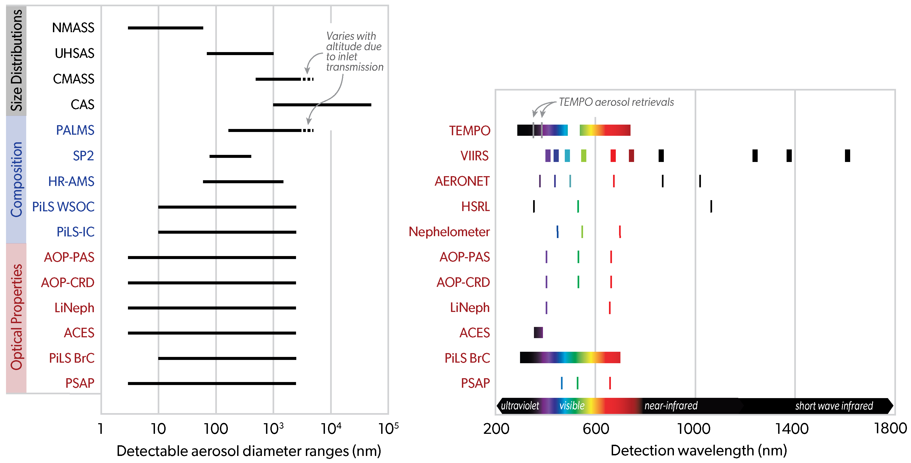
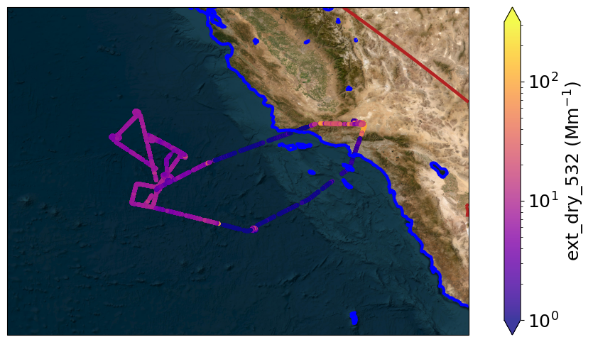
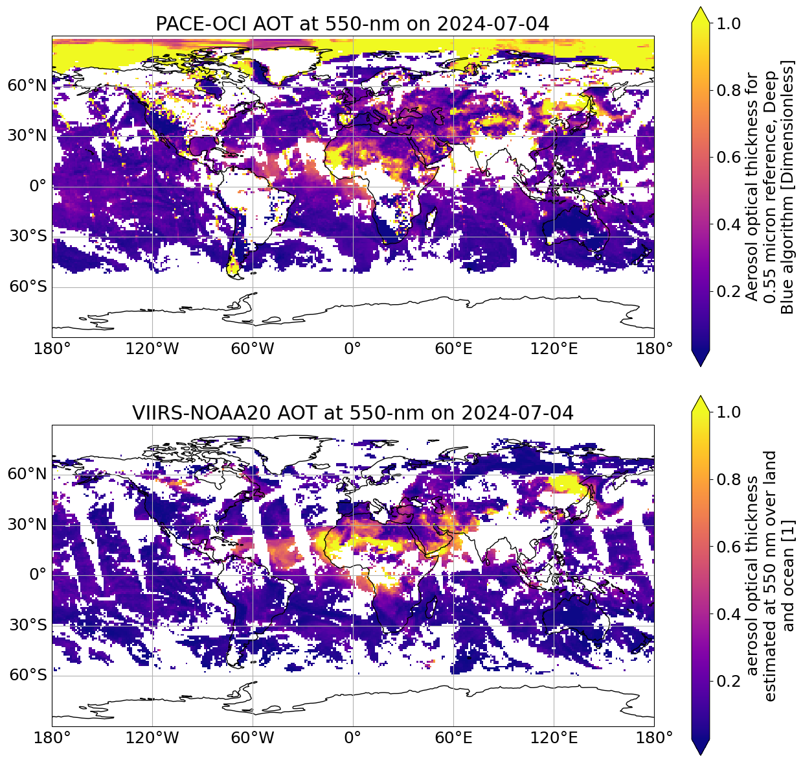
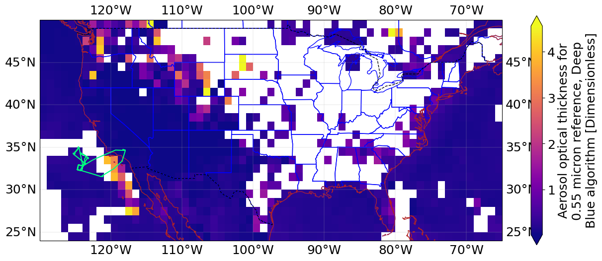
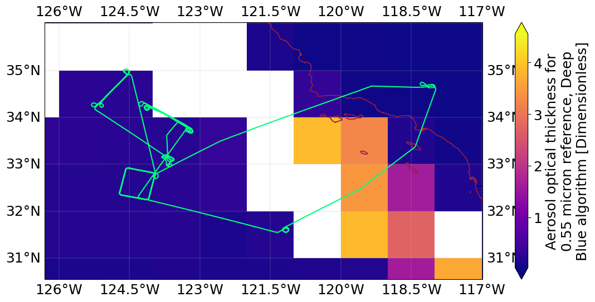
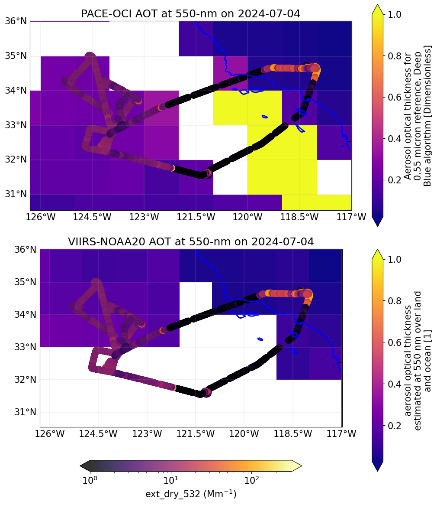
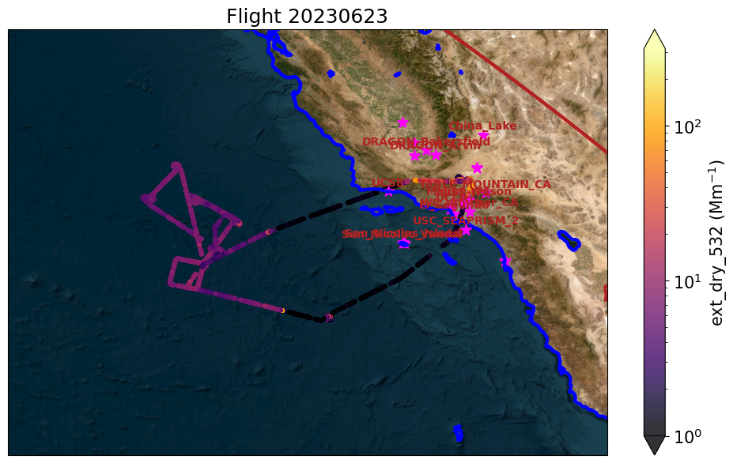
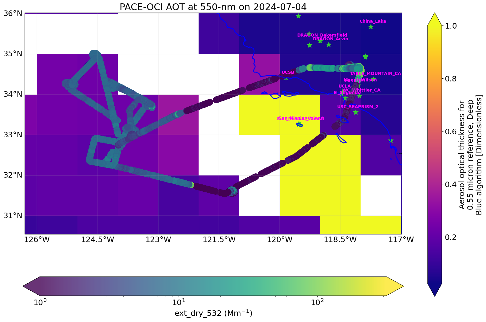

Visualization of in-situ, ground-based aerosol measurements with satellite data#
Contributors: Han Huynh (CU Boulder (CIRES); NOAA Chemical Sciences Laboratory (CSL)), Prem Maheshwarkar (University of Paris Est)
(CU Boulder (CIRES); NOAA Chemical Sciences Laboratory (CSL)), Prem Maheshwarkar (University of Paris Est)
This notebook shows and example of visualizing ground-based and satellite data together.

Image courtesy of Chelsea Thompson (NOAA CSL), Charles Brock (NOAA CSL), Adam Ahern (NOAA CSL)Summary#
The main motivation of visualizing multi-source aerosol data together is to facilitate the evaluation of satellite aerosol data products (e.g., aerosol optical depth, i.e., AOD) with an aerosol optical model built from in-situ measurements (e.g., microphysical, chemical, and optical measurements). Ground-based measurements, such as AERONET, add another point of AOD comparison.
The notebook contains functions and examples of importing different aerosol data/data formats:
In-situ aerosol aircraft measurements (e.g., aerosol optical properties, i.e., AOP)
Ground-based aerosol optical measurement (e.g., AERONET)
Satellite aerosol data product (aerosol optical thickness, i.e. AOT)
The goal of this notebook is to set up functions to quickly ingest data files (e.g., .ICARTT field data) and visualize them together. The scientific calculations required to ‘properly’ compare them are not listed here. Note that aerosol extinction extracted from AOP field measurements are not reflected of aerosol extinctions at ambient relative humidity (RH) and temperature. The determination of ambient RH-extinction from aerosol microphysical and chemical measurements are under development and will be included in the future.
Contents#
Contact info: han.huynh@noaa.gov; prem.maheshwarkar@lisa.ipsl.fr
#%pip install regex
# -*- coding: utf-8 -*-
import sys
import os
import pandas as pd
from datetime import datetime, timedelta
from copy import deepcopy
import numpy as np
import regex as re
import matplotlib.dates as mdates
import matplotlib as mp
import matplotlib.pyplot as plt
import matplotlib.dates as mdates
from matplotlib.ticker import LogFormatter
# Basemap to overlay flight track and in situ measurements
#%pip install basemap basemap-data-hires
from mpl_toolkits.basemap import Basemap
from mpl_toolkits.axes_grid1 import make_axes_locatable
import cartopy.crs as ccrs
1. In-situ aerosol aircraft measurement#
b) Visualization#
"""
Overlay flight track colored by in-situ aerosol optical measurements
"""
def visualize_aer_data_map(nav_aop_df, aer_prop, flight_date):
params = {'mathtext.default': 'regular' , 'font.size': 18}
plt.rcParams.update(params)
# Make the figure
fig = plt.figure(figsize=(13, 6))
ax = plt.axes(projection=ccrs.PlateCarree())
# Initialize the basemap
m = Basemap(llcrnrlat = lat_min-2,
llcrnrlon = lon_min-2,
urcrnrlat = lat_max+2,
urcrnrlon = lon_max+2,
resolution='h')
# Get the area of interest imagery
#m.arcgisimage(service='ESRI_Imagery_World_2D', xpixels = 2500, verbose= True, alpha= .6)
m.arcgisimage(xpixels = 1500, verbose= True)
# vmax value for the aerosol property
scat_pts = nav_aop_df[aer_prop]
vmax_bound = scat_pts.max()
# Plot aerosol optical property in scatter plot and colored by magnitude of that property
co_map = ax.scatter(nav_aop_df.Longitude, nav_aop_df.Latitude, s=10, marker='o',
c=nav_aop_df[aer_prop], cmap='plasma', #vmin=100, vmax=300,
norm=mp.colors.LogNorm(vmin=1, vmax=vmax_bound),
label=flight_date,
alpha=0.8)
# create an axes on the right side of ax. The width of cax will be 5%
# of ax and the padding between cax and ax will be fixed at 0.05 inch.
#divider = make_axes_locatable(ax)
#cax = divider.append_axes("right", size="5%", pad=0.1)
cbar = plt.colorbar(co_map, extend='both')
c_label = aer_prop + ' ($Mm^{-1}$)'
cbar.set_label(c_label)
# Draw the coasts
m.drawcoastlines(color='blue', linewidth=3)
# Draw the states
m.drawstates(color='firebrick',linewidth=3)
"""
Temporal profile of aerosol optical properties as a function of altitude
"""
'\nTemporal profile of aerosol optical properties as a function of altitude\n\n'
"""
Example: flight path colored by measured dry aerosol extinction at 532 nm
"""
# To know what column name are for the in situ data, do "nav_aop_df.dtypes"
in_situ_aer_prop = 'ext_dry_532'
visualize_aer_data_map(nav_aop_df, in_situ_aer_prop, flight_date)
http://server.arcgisonline.com/ArcGIS/rest/services/World_Imagery/MapServer/export?bbox=-128.3056107,28.5494499,-114.9800568,38.027298&bboxSR=4326&imageSR=4326&size=1500,1066&dpi=96&format=png32&transparent=true&f=image

2. Ground-based aerosol measurement (AERONET)#
a) Download AERONET site list for a region#
By specifying a region from which we want AERONET measurements (e.g., US), the download_aoc_list function will (1) download all AERONET sites into a .csv file with latitude and longitude information and (2) save as a dataframe in the system. We can specify the following to limit the list of AERONET sites:
Region
Date range (format: YYYYMMDD)
Output file name
Data level
# -*- coding: utf-8 -*-
"""
Created on Tue Sep 27 10:59:45 2022
@author: Maheshwarkar Prem
"""
#%pip install wget
from glob import glob
import wget
def download_aoc_list(region, product, start_date, end_date, output_file_name, level):
# region = 'ILE_DE_FRANCE', 'FRANCE', 'EUROPE', 'INDIA', 'USA', 'GLOBAL'
avg = '10'
#level = '10'
# start_date = 20220704
# end_date = 20220706
download = 'on' # Keep this on to download the data
###############################################################################
if region == 'FRANCE':
lat_min = 40; lat_max = 60.0; lon_min = -5.0 ; lon_max = 15.0
elif region == 'ILE_DE_FRANCE':
lat_min = 47; lat_max = 50.0; lon_min = 1.0 ; lon_max = 5.0
# elif region == 'EUROPE':
# lat_min = 47; lat_max = 50.0; lon_min = 1.0 ; lon_max = 5.0
elif region == 'INDIA':
lat_min = 6; lat_max = 38.0; lon_min = 66.0 ; lon_max = 98.0
elif region == 'USA':
lat_min = 24; lat_max = 50.0; lon_min = -125 ; lon_max = -67
elif region == 'GLOBAL':
lat_min = -90; lat_max = 90.0; lon_min = -180.0 ; lon_max = 180.0
###############################################################################
__db_path__ = data_path
if glob(__db_path__+'/sites.csv') == [] :
wget.download('https://aeronet.gsfc.nasa.gov/aeronet_locations_v3.txt', __db_path__ + '/' + 'sites.csv')
data = pd.read_csv(__db_path__ + '/sites.csv', skiprows=1, delimiter=',')
data.rename(columns={'Longitude(decimal_degrees)': 'Longitude', 'Latitude(decimal_degrees)':'Latitude'}, inplace=True)
data_region = data[(data.Latitude > lat_min) & (data.Latitude < lat_max) & (data.Longitude > lon_min) & (data.Longitude < lon_max)]
data_region = data_region.reset_index()
start_date = str(start_date); end_date = str(end_date)
start_year = start_date[0:4]; start_month = start_date[4:6]; start_day = start_date[6:9]
end_year = end_date[0:4]; end_month = end_date[4:6]; end_day = end_date[6:9]
[total_station, param] = np.shape(data_region)
year_initial = [start_year] * total_station
month_initial = [start_month] * total_station
day_initial = [start_day] * total_station
year_final = [end_year]* total_station
month_final = [end_month]* total_station
day_final = [end_day]* total_station
level = [level]* total_station
avg = avg = [avg]* total_station
product = [product]* total_station
download = [download]* total_station
input_df = pd.DataFrame({'year_initial': year_initial, 'month_initial':month_initial, 'day_initial': day_initial,
'year_final':year_final, 'month_final': month_final, 'day_final':day_final,'site': data_region.Site_Name,
'level':level, 'avg': avg, 'products':product, 'download':download, 'longitude':data_region.Longitude, 'latitude':data_region.Latitude})
input_df.to_csv(data_path + '/' + output_file_name + '.csv', index=False)
return input_df
#list_aeronet(region, product,start_date, end_date, output_file_name)
if __name__ == '__download_aoc_region___' :
import sys
if len(sys.argv) == 1 :
print("""Usage:
Downloads the list of aeronet stations and prepares input file for download_aeronet.py script.
:\n args: region start_date end_date output_file_name product\n
Example :\n
list_aeronet.py FRANCE 20220616 20220618 FRANCE_ACROSS aod/n
- siz - Size distribution/n
- rin - Refractive indicies (real and imaginary)/n
- cad - Coincident AOT data with almucantar retrieval/n
- vol - Volume concentration, volume mean radius, effective radius and standard deviation/n
- tab - AOD absorption/n
- aod - AOD extinction/n
- ssa - Single scattering albedo/n
- asy - Asymmetry factor/n
- frc - Radiative Forcing/n
- lid - Lidar and Depolarization Ratios/n
- flx - Spectral flux/n
- pfn - Phase function/n
- pfncoarse - coarse mode phase functions/n
- pfnfine - fine mode phase functions/n
- directsun - Aerosol Optical Depth from AERONET direct sun measurements""")
main(*sys.argv[1:])
"""
Example: download a list of AERONET sites in the US region that has AOD data in the specified date range at the specified data level
"""
region_name = 'USA'
data_product = 'aod'
start_date = '20230601'
end_date = '20230831'
region_aoc_summary_file_name = 'AERONET_US_sites'
data_level = '10'
# There will be a generated .csv with the list of AERONET sites but also a dataframe that houses that information
us_aoc_list_df = download_aoc_list(region_name, data_product, start_date, end_date, region_aoc_summary_file_name, data_level)
b) Download all sites within the specified region#
The download_aoc_sites function will download each AERONET site in the specified region as an individual .csv file. We need to specify (1) the name of the .csv file generated in the previous step and (2) a name for the output file.
# -*- coding: utf-8 -*-
#%pip install ssl platform
"""
Imported from GitHub
https://github.com/fabioslopes/download_aeronet_data/blob/master/aeronet_locations_v3.csv
input_file_name: the name of the CSV file that contains all the AERONET sites of the specified region
"""
import ssl
def download_aoc_sites(region_sites_csv_name, outputdir):
if (not os.environ.get('PYTHONHTTPSVERIFY', '') and getattr(ssl, '_create_unverified_context', None)):
ssl._create_default_https_context = ssl._create_unverified_context
'''Creating the folder for raw data download from AERONET web data service'''
dircontents = os.sep.join([data_path, outputdir])
if not os.path.exists(dircontents):
os.makedirs(dircontents)
print(dircontents)
'''Reading the input data to download AERONET data from web data service'''
# THere may be multiple regions AERONET site files from the previous step
filenames = [name for name in os.listdir(data_path) if name.startswith(region_sites_csv_name)]
nfiles=len(filenames)
filenameout = []
i = 1
for x in range(0, len(filenames)):
newfile = os.sep.join([data_path, filenames[x]])
filedata = pd.read_csv(newfile, sep=',' )
for i in range(0,len(filedata)):
if filedata['download'][i] == 'on':
if filedata['month_initial'][i] < 10:
filemonthin = '0'+ str(filedata['month_initial'][i])
else:
filemonthin = str(filedata['month_initial'][i])
if filedata['month_final'][i] < 10:
filemonthfinal = '0'+ str(filedata['month_final'][i])
else:
filemonthfinal = str(filedata['month_final'][i])
if filedata['day_initial'][i] < 10:
filedayin = '0'+ str(filedata['day_initial'][i])
else:
filedayin = str(filedata['day_initial'][i])
if filedata['day_final'][i] < 10:
filedayfinal = '0'+ str(filedata['day_final'][i])
else:
filedayfinal = str(filedata['day_final'][i])
if filedata['level'][i] == 10:
filelevel = '10'
elif filedata['level'][i] == 15:
filelevel = '15'
else:
filelevel = '20'
# filenameout = str(filedata['year_initial'][i])+filemonthin+filedayin+'_'+\
# str(filedata['year_final'][i])+filemonthfinal+filedayfinal+'_'+\
# filedata['site'][i]+'_level'+filelevel+'.'+filedata['products'][i]
filenameout = filedata['site'][i]
url = 'https://aeronet.gsfc.nasa.gov/cgi-bin/print_web_data_inv_v3?site='+filedata['site'][i]+\
'&year='+str(filedata['year_initial'][i])+'&month='+filemonthin+'&day='+filedayin+\
'&year2='+str(filedata['year_final'][i])+'&month2='+filemonthfinal+'&day2='+filedayfinal+\
'&product='+filedata['products'][i].upper()+'&AVG='+str(filedata['avg'][i])+'&ALM'+filelevel+'=1&if_no_html=1'
if filedata['products'][i] == 'pfncoarse':
url = 'https://aeronet.gsfc.nasa.gov/cgi-bin/print_web_data_inv_v3?site='+filedata['site'][i]+\
'&year='+str(filedata['year_initial'][i])+'&month='+filemonthin+'&day='+filedayin+\
'&year2='+str(filedata['year_final'][i])+'&month2='+filemonthfinal+'&day2='+filedayfinal+\
'&product=PFN&AVG='+str(filedata['avg'][i])+'&ALM'+filelevel+'=1&if_no_html=1&pfn_type=1'
if filedata['products'][i] == 'pfnfine':
url = 'https://aeronet.gsfc.nasa.gov/cgi-bin/print_web_data_inv_v3?site='+filedata['site'][i]+\
'&year='+str(filedata['year_initial'][i])+'&month='+filemonthin+'&day='+filedayin+\
'&year2='+str(filedata['year_final'][i])+'&month2='+filemonthfinal+'&day2='+filedayfinal+\
'&product=PFN&AVG='+str(filedata['avg'][i])+'&ALM'+filelevel+'=1&if_no_html=1&pfn_type=2'
if filedata['products'][i] == 'directsun':
url = 'https://aeronet.gsfc.nasa.gov/cgi-bin/print_web_data_v3?site='+filedata['site'][i]+\
'&year='+str(filedata['year_initial'][i])+'&month='+filemonthin+'&day='+filedayin+\
'&year2='+str(filedata['year_final'][i])+'&month2='+filemonthfinal+'&day2='+filedayfinal+\
'&AOD'+filelevel+'=1&AVG='+str(filedata['avg'][i])
filename = wget.download(url, out=os.sep.join([dircontents, filenameout]))
print(url)
print('downloading....%s of %s files.'%(i, len(filedata)))
i = i+1
return
if __name__ == '__download_aoc_sites__' :
import sys
if len(sys.argv) == 1 :
print("""Usage:
Downloads the data from aeronet stations based on list_aeronet.py script.
:\n args: input_file_name\n
Example :\n
download_aeronet.py ACROSS_FRANCE""")
main(*sys.argv[1:])
aoc_folder_name = 'US_AOD_AERONET_sites'
download_aoc_sites(region_aoc_summary_file_name, aoc_folder_name)
/home/jovyan/proj_2024_PACEToolkit/data/in-situ-aerosol/US_AOD_AERONET_sites
https://aeronet.gsfc.nasa.gov/cgi-bin/print_web_data_inv_v3?site=Tucson&year=2023&month=06&day=01&year2=2023&month2=08&day2=31&product=AOD&AVG=10&ALM10=1&if_no_html=1
downloading....0 of 509 files.
https://aeronet.gsfc.nasa.gov/cgi-bin/print_web_data_inv_v3?site=GSFC&year=2023&month=06&day=01&year2=2023&month2=08&day2=31&product=AOD&AVG=10&ALM10=1&if_no_html=1
downloading....1 of 509 files.
https://aeronet.gsfc.nasa.gov/cgi-bin/print_web_data_inv_v3?site=Kolfield&year=2023&month=06&day=01&year2=2023&month2=08&day2=31&product=AOD&AVG=10&ALM10=1&if_no_html=1
downloading....2 of 509 files.
https://aeronet.gsfc.nasa.gov/cgi-bin/print_web_data_inv_v3?site=Harvard_Forest&year=2023&month=06&day=01&year2=2023&month2=08&day2=31&product=AOD&AVG=10&ALM10=1&if_no_html=1
downloading....3 of 509 files.
https://aeronet.gsfc.nasa.gov/cgi-bin/print_web_data_inv_v3?site=Wallops&year=2023&month=06&day=01&year2=2023&month2=08&day2=31&product=AOD&AVG=10&ALM10=1&if_no_html=1
downloading....4 of 509 files.
https://aeronet.gsfc.nasa.gov/cgi-bin/print_web_data_inv_v3?site=Hampton_Roads&year=2023&month=06&day=01&year2=2023&month2=08&day2=31&product=AOD&AVG=10&ALM10=1&if_no_html=1
downloading....5 of 509 files.
https://aeronet.gsfc.nasa.gov/cgi-bin/print_web_data_inv_v3?site=Hagerstown&year=2023&month=06&day=01&year2=2023&month2=08&day2=31&product=AOD&AVG=10&ALM10=1&if_no_html=1
downloading....6 of 509 files.
https://aeronet.gsfc.nasa.gov/cgi-bin/print_web_data_inv_v3?site=Hog_Island&year=2023&month=06&day=01&year2=2023&month2=08&day2=31&product=AOD&AVG=10&ALM10=1&if_no_html=1
downloading....7 of 509 files.
https://aeronet.gsfc.nasa.gov/cgi-bin/print_web_data_inv_v3?site=Arizona&year=2023&month=06&day=01&year2=2023&month2=08&day2=31&product=AOD&AVG=10&ALM10=1&if_no_html=1
downloading....8 of 509 files.
https://aeronet.gsfc.nasa.gov/cgi-bin/print_web_data_inv_v3?site=Key_Biscayne&year=2023&month=06&day=01&year2=2023&month2=08&day2=31&product=AOD&AVG=10&ALM10=1&if_no_html=1
downloading....9 of 509 files.
https://aeronet.gsfc.nasa.gov/cgi-bin/print_web_data_inv_v3?site=Sevilleta&year=2023&month=06&day=01&year2=2023&month2=08&day2=31&product=AOD&AVG=10&ALM10=1&if_no_html=1
downloading....10 of 509 files.
https://aeronet.gsfc.nasa.gov/cgi-bin/print_web_data_inv_v3?site=Cart_Site2&year=2023&month=06&day=01&year2=2023&month2=08&day2=31&product=AOD&AVG=10&ALM10=1&if_no_html=1
downloading....11 of 509 files.
https://aeronet.gsfc.nasa.gov/cgi-bin/print_web_data_inv_v3?site=Cart_Site&year=2023&month=06&day=01&year2=2023&month2=08&day2=31&product=AOD&AVG=10&ALM10=1&if_no_html=1
downloading....12 of 509 files.
https://aeronet.gsfc.nasa.gov/cgi-bin/print_web_data_inv_v3?site=HJAndrews&year=2023&month=06&day=01&year2=2023&month2=08&day2=31&product=AOD&AVG=10&ALM10=1&if_no_html=1
downloading....13 of 509 files.
https://aeronet.gsfc.nasa.gov/cgi-bin/print_web_data_inv_v3?site=Ukiah&year=2023&month=06&day=01&year2=2023&month2=08&day2=31&product=AOD&AVG=10&ALM10=1&if_no_html=1
downloading....14 of 509 files.
https://aeronet.gsfc.nasa.gov/cgi-bin/print_web_data_inv_v3?site=Wisconsin&year=2023&month=06&day=01&year2=2023&month2=08&day2=31&product=AOD&AVG=10&ALM10=1&if_no_html=1
downloading....15 of 509 files.
https://aeronet.gsfc.nasa.gov/cgi-bin/print_web_data_inv_v3?site=Spokane&year=2023&month=06&day=01&year2=2023&month2=08&day2=31&product=AOD&AVG=10&ALM10=1&if_no_html=1
downloading....16 of 509 files.
https://aeronet.gsfc.nasa.gov/cgi-bin/print_web_data_inv_v3?site=Albany_Oregon&year=2023&month=06&day=01&year2=2023&month2=08&day2=31&product=AOD&AVG=10&ALM10=1&if_no_html=1
downloading....17 of 509 files.
https://aeronet.gsfc.nasa.gov/cgi-bin/print_web_data_inv_v3?site=Biggs&year=2023&month=06&day=01&year2=2023&month2=08&day2=31&product=AOD&AVG=10&ALM10=1&if_no_html=1
downloading....18 of 509 files.
https://aeronet.gsfc.nasa.gov/cgi-bin/print_web_data_inv_v3?site=Red_Bluff&year=2023&month=06&day=01&year2=2023&month2=08&day2=31&product=AOD&AVG=10&ALM10=1&if_no_html=1
downloading....19 of 509 files.
https://aeronet.gsfc.nasa.gov/cgi-bin/print_web_data_inv_v3?site=Pullman&year=2023&month=06&day=01&year2=2023&month2=08&day2=31&product=AOD&AVG=10&ALM10=1&if_no_html=1
downloading....20 of 509 files.
https://aeronet.gsfc.nasa.gov/cgi-bin/print_web_data_inv_v3?site=Bordman&year=2023&month=06&day=01&year2=2023&month2=08&day2=31&product=AOD&AVG=10&ALM10=1&if_no_html=1
downloading....21 of 509 files.
https://aeronet.gsfc.nasa.gov/cgi-bin/print_web_data_inv_v3?site=White_Sands&year=2023&month=06&day=01&year2=2023&month2=08&day2=31&product=AOD&AVG=10&ALM10=1&if_no_html=1
downloading....22 of 509 files.
https://aeronet.gsfc.nasa.gov/cgi-bin/print_web_data_inv_v3?site=Missoula&year=2023&month=06&day=01&year2=2023&month2=08&day2=31&product=AOD&AVG=10&ALM10=1&if_no_html=1
downloading....23 of 509 files.
https://aeronet.gsfc.nasa.gov/cgi-bin/print_web_data_inv_v3?site=Owens_Lake&year=2023&month=06&day=01&year2=2023&month2=08&day2=31&product=AOD&AVG=10&ALM10=1&if_no_html=1
downloading....24 of 509 files.
https://aeronet.gsfc.nasa.gov/cgi-bin/print_web_data_inv_v3?site=UCSB&year=2023&month=06&day=01&year2=2023&month2=08&day2=31&product=AOD&AVG=10&ALM10=1&if_no_html=1
downloading....25 of 509 files.
https://aeronet.gsfc.nasa.gov/cgi-bin/print_web_data_inv_v3?site=Jug_Bay&year=2023&month=06&day=01&year2=2023&month2=08&day2=31&product=AOD&AVG=10&ALM10=1&if_no_html=1
downloading....26 of 509 files.
https://aeronet.gsfc.nasa.gov/cgi-bin/print_web_data_inv_v3?site=SERC&year=2023&month=06&day=01&year2=2023&month2=08&day2=31&product=AOD&AVG=10&ALM10=1&if_no_html=1
downloading....27 of 509 files.
https://aeronet.gsfc.nasa.gov/cgi-bin/print_web_data_inv_v3?site=Burtonsville&year=2023&month=06&day=01&year2=2023&month2=08&day2=31&product=AOD&AVG=10&ALM10=1&if_no_html=1
downloading....28 of 509 files.
https://aeronet.gsfc.nasa.gov/cgi-bin/print_web_data_inv_v3?site=Gaithersburg&year=2023&month=06&day=01&year2=2023&month2=08&day2=31&product=AOD&AVG=10&ALM10=1&if_no_html=1
downloading....29 of 509 files.
https://aeronet.gsfc.nasa.gov/cgi-bin/print_web_data_inv_v3?site=La_Jolla&year=2023&month=06&day=01&year2=2023&month2=08&day2=31&product=AOD&AVG=10&ALM10=1&if_no_html=1
downloading....30 of 509 files.
https://aeronet.gsfc.nasa.gov/cgi-bin/print_web_data_inv_v3?site=Boulder&year=2023&month=06&day=01&year2=2023&month2=08&day2=31&product=AOD&AVG=10&ALM10=1&if_no_html=1
downloading....31 of 509 files.
https://aeronet.gsfc.nasa.gov/cgi-bin/print_web_data_inv_v3?site=Madison&year=2023&month=06&day=01&year2=2023&month2=08&day2=31&product=AOD&AVG=10&ALM10=1&if_no_html=1
downloading....32 of 509 files.
https://aeronet.gsfc.nasa.gov/cgi-bin/print_web_data_inv_v3?site=Trinidad_Head&year=2023&month=06&day=01&year2=2023&month2=08&day2=31&product=AOD&AVG=10&ALM10=1&if_no_html=1
downloading....33 of 509 files.
https://aeronet.gsfc.nasa.gov/cgi-bin/print_web_data_inv_v3?site=CARTEL&year=2023&month=06&day=01&year2=2023&month2=08&day2=31&product=AOD&AVG=10&ALM10=1&if_no_html=1
downloading....34 of 509 files.
https://aeronet.gsfc.nasa.gov/cgi-bin/print_web_data_inv_v3?site=Toronto&year=2023&month=06&day=01&year2=2023&month2=08&day2=31&product=AOD&AVG=10&ALM10=1&if_no_html=1
downloading....35 of 509 files.
https://aeronet.gsfc.nasa.gov/cgi-bin/print_web_data_inv_v3?site=OceolaNF&year=2023&month=06&day=01&year2=2023&month2=08&day2=31&product=AOD&AVG=10&ALM10=1&if_no_html=1
downloading....36 of 509 files.
https://aeronet.gsfc.nasa.gov/cgi-bin/print_web_data_inv_v3?site=JonesERC&year=2023&month=06&day=01&year2=2023&month2=08&day2=31&product=AOD&AVG=10&ALM10=1&if_no_html=1
downloading....37 of 509 files.
https://aeronet.gsfc.nasa.gov/cgi-bin/print_web_data_inv_v3?site=TallTimbers&year=2023&month=06&day=01&year2=2023&month2=08&day2=31&product=AOD&AVG=10&ALM10=1&if_no_html=1
downloading....38 of 509 files.
https://aeronet.gsfc.nasa.gov/cgi-bin/print_web_data_inv_v3?site=OkefenokeeNWR&year=2023&month=06&day=01&year2=2023&month2=08&day2=31&product=AOD&AVG=10&ALM10=1&if_no_html=1
downloading....39 of 509 files.
https://aeronet.gsfc.nasa.gov/cgi-bin/print_web_data_inv_v3?site=Dry_Tortugas&year=2023&month=06&day=01&year2=2023&month2=08&day2=31&product=AOD&AVG=10&ALM10=1&if_no_html=1
downloading....40 of 509 files.
https://aeronet.gsfc.nasa.gov/cgi-bin/print_web_data_inv_v3?site=Windsor_B&year=2023&month=06&day=01&year2=2023&month2=08&day2=31&product=AOD&AVG=10&ALM10=1&if_no_html=1
downloading....41 of 509 files.
https://aeronet.gsfc.nasa.gov/cgi-bin/print_web_data_inv_v3?site=Miami&year=2023&month=06&day=01&year2=2023&month2=08&day2=31&product=AOD&AVG=10&ALM10=1&if_no_html=1
downloading....42 of 509 files.
https://aeronet.gsfc.nasa.gov/cgi-bin/print_web_data_inv_v3?site=Sterling&year=2023&month=06&day=01&year2=2023&month2=08&day2=31&product=AOD&AVG=10&ALM10=1&if_no_html=1
downloading....43 of 509 files.
https://aeronet.gsfc.nasa.gov/cgi-bin/print_web_data_inv_v3?site=Sandy_Hook&year=2023&month=06&day=01&year2=2023&month2=08&day2=31&product=AOD&AVG=10&ALM10=1&if_no_html=1
downloading....44 of 509 files.
https://aeronet.gsfc.nasa.gov/cgi-bin/print_web_data_inv_v3?site=BONDVILLE&year=2023&month=06&day=01&year2=2023&month2=08&day2=31&product=AOD&AVG=10&ALM10=1&if_no_html=1
downloading....45 of 509 files.
https://aeronet.gsfc.nasa.gov/cgi-bin/print_web_data_inv_v3?site=MISR-JPL&year=2023&month=06&day=01&year2=2023&month2=08&day2=31&product=AOD&AVG=10&ALM10=1&if_no_html=1
downloading....46 of 509 files.
https://aeronet.gsfc.nasa.gov/cgi-bin/print_web_data_inv_v3?site=NEW_YORK&year=2023&month=06&day=01&year2=2023&month2=08&day2=31&product=AOD&AVG=10&ALM10=1&if_no_html=1
downloading....47 of 509 files.
https://aeronet.gsfc.nasa.gov/cgi-bin/print_web_data_inv_v3?site=Cheritan&year=2023&month=06&day=01&year2=2023&month2=08&day2=31&product=AOD&AVG=10&ALM10=1&if_no_html=1
downloading....48 of 509 files.
https://aeronet.gsfc.nasa.gov/cgi-bin/print_web_data_inv_v3?site=Tombstone&year=2023&month=06&day=01&year2=2023&month2=08&day2=31&product=AOD&AVG=10&ALM10=1&if_no_html=1
downloading....49 of 509 files.
https://aeronet.gsfc.nasa.gov/cgi-bin/print_web_data_inv_v3?site=Windsor_M&year=2023&month=06&day=01&year2=2023&month2=08&day2=31&product=AOD&AVG=10&ALM10=1&if_no_html=1
downloading....50 of 509 files.
https://aeronet.gsfc.nasa.gov/cgi-bin/print_web_data_inv_v3?site=San_Nicolas&year=2023&month=06&day=01&year2=2023&month2=08&day2=31&product=AOD&AVG=10&ALM10=1&if_no_html=1
downloading....51 of 509 files.
https://aeronet.gsfc.nasa.gov/cgi-bin/print_web_data_inv_v3?site=Lunar_Lake&year=2023&month=06&day=01&year2=2023&month2=08&day2=31&product=AOD&AVG=10&ALM10=1&if_no_html=1
downloading....52 of 509 files.
https://aeronet.gsfc.nasa.gov/cgi-bin/print_web_data_inv_v3?site=Sioux_Falls&year=2023&month=06&day=01&year2=2023&month2=08&day2=31&product=AOD&AVG=10&ALM10=1&if_no_html=1
downloading....53 of 509 files.
https://aeronet.gsfc.nasa.gov/cgi-bin/print_web_data_inv_v3?site=Walker_Branch&year=2023&month=06&day=01&year2=2023&month2=08&day2=31&product=AOD&AVG=10&ALM10=1&if_no_html=1
downloading....54 of 509 files.
https://aeronet.gsfc.nasa.gov/cgi-bin/print_web_data_inv_v3?site=Niabrara&year=2023&month=06&day=01&year2=2023&month2=08&day2=31&product=AOD&AVG=10&ALM10=1&if_no_html=1
downloading....55 of 509 files.
https://aeronet.gsfc.nasa.gov/cgi-bin/print_web_data_inv_v3?site=Egbert&year=2023&month=06&day=01&year2=2023&month2=08&day2=31&product=AOD&AVG=10&ALM10=1&if_no_html=1
downloading....56 of 509 files.
https://aeronet.gsfc.nasa.gov/cgi-bin/print_web_data_inv_v3?site=Brookhaven&year=2023&month=06&day=01&year2=2023&month2=08&day2=31&product=AOD&AVG=10&ALM10=1&if_no_html=1
downloading....57 of 509 files.
https://aeronet.gsfc.nasa.gov/cgi-bin/print_web_data_inv_v3?site=Saturn_Island&year=2023&month=06&day=01&year2=2023&month2=08&day2=31&product=AOD&AVG=10&ALM10=1&if_no_html=1
downloading....58 of 509 files.
https://aeronet.gsfc.nasa.gov/cgi-bin/print_web_data_inv_v3?site=Oyster&year=2023&month=06&day=01&year2=2023&month2=08&day2=31&product=AOD&AVG=10&ALM10=1&if_no_html=1
downloading....59 of 509 files.
https://aeronet.gsfc.nasa.gov/cgi-bin/print_web_data_inv_v3?site=Monclova&year=2023&month=06&day=01&year2=2023&month2=08&day2=31&product=AOD&AVG=10&ALM10=1&if_no_html=1
downloading....60 of 509 files.
https://aeronet.gsfc.nasa.gov/cgi-bin/print_web_data_inv_v3?site=NASA_LaRC&year=2023&month=06&day=01&year2=2023&month2=08&day2=31&product=AOD&AVG=10&ALM10=1&if_no_html=1
downloading....61 of 509 files.
https://aeronet.gsfc.nasa.gov/cgi-bin/print_web_data_inv_v3?site=Andros_Island&year=2023&month=06&day=01&year2=2023&month2=08&day2=31&product=AOD&AVG=10&ALM10=1&if_no_html=1
downloading....62 of 509 files.
https://aeronet.gsfc.nasa.gov/cgi-bin/print_web_data_inv_v3?site=Table_Mountain&year=2023&month=06&day=01&year2=2023&month2=08&day2=31&product=AOD&AVG=10&ALM10=1&if_no_html=1
downloading....63 of 509 files.
https://aeronet.gsfc.nasa.gov/cgi-bin/print_web_data_inv_v3?site=TABLE_MOUNTAIN_CA&year=2023&month=06&day=01&year2=2023&month2=08&day2=31&product=AOD&AVG=10&ALM10=1&if_no_html=1
downloading....64 of 509 files.
https://aeronet.gsfc.nasa.gov/cgi-bin/print_web_data_inv_v3?site=Howland&year=2023&month=06&day=01&year2=2023&month2=08&day2=31&product=AOD&AVG=10&ALM10=1&if_no_html=1
downloading....65 of 509 files.
https://aeronet.gsfc.nasa.gov/cgi-bin/print_web_data_inv_v3?site=Chequamegon&year=2023&month=06&day=01&year2=2023&month2=08&day2=31&product=AOD&AVG=10&ALM10=1&if_no_html=1
downloading....66 of 509 files.
https://aeronet.gsfc.nasa.gov/cgi-bin/print_web_data_inv_v3?site=USDA&year=2023&month=06&day=01&year2=2023&month2=08&day2=31&product=AOD&AVG=10&ALM10=1&if_no_html=1
downloading....67 of 509 files.
https://aeronet.gsfc.nasa.gov/cgi-bin/print_web_data_inv_v3?site=EOPACE1&year=2023&month=06&day=01&year2=2023&month2=08&day2=31&product=AOD&AVG=10&ALM10=1&if_no_html=1
downloading....68 of 509 files.
https://aeronet.gsfc.nasa.gov/cgi-bin/print_web_data_inv_v3?site=EOPACE2&year=2023&month=06&day=01&year2=2023&month2=08&day2=31&product=AOD&AVG=10&ALM10=1&if_no_html=1
downloading....69 of 509 files.
https://aeronet.gsfc.nasa.gov/cgi-bin/print_web_data_inv_v3?site=Carlsbad&year=2023&month=06&day=01&year2=2023&month2=08&day2=31&product=AOD&AVG=10&ALM10=1&if_no_html=1
downloading....70 of 509 files.
https://aeronet.gsfc.nasa.gov/cgi-bin/print_web_data_inv_v3?site=Buena_Vista&year=2023&month=06&day=01&year2=2023&month2=08&day2=31&product=AOD&AVG=10&ALM10=1&if_no_html=1
downloading....71 of 509 files.
https://aeronet.gsfc.nasa.gov/cgi-bin/print_web_data_inv_v3?site=Rimrock&year=2023&month=06&day=01&year2=2023&month2=08&day2=31&product=AOD&AVG=10&ALM10=1&if_no_html=1
downloading....72 of 509 files.
https://aeronet.gsfc.nasa.gov/cgi-bin/print_web_data_inv_v3?site=Albuquerque&year=2023&month=06&day=01&year2=2023&month2=08&day2=31&product=AOD&AVG=10&ALM10=1&if_no_html=1
downloading....73 of 509 files.
https://aeronet.gsfc.nasa.gov/cgi-bin/print_web_data_inv_v3?site=Tahoe_City&year=2023&month=06&day=01&year2=2023&month2=08&day2=31&product=AOD&AVG=10&ALM10=1&if_no_html=1
downloading....74 of 509 files.
https://aeronet.gsfc.nasa.gov/cgi-bin/print_web_data_inv_v3?site=Shelton&year=2023&month=06&day=01&year2=2023&month2=08&day2=31&product=AOD&AVG=10&ALM10=1&if_no_html=1
downloading....75 of 509 files.
https://aeronet.gsfc.nasa.gov/cgi-bin/print_web_data_inv_v3?site=Mont_Joli&year=2023&month=06&day=01&year2=2023&month2=08&day2=31&product=AOD&AVG=10&ALM10=1&if_no_html=1
downloading....76 of 509 files.
https://aeronet.gsfc.nasa.gov/cgi-bin/print_web_data_inv_v3?site=Marina&year=2023&month=06&day=01&year2=2023&month2=08&day2=31&product=AOD&AVG=10&ALM10=1&if_no_html=1
downloading....77 of 509 files.
https://aeronet.gsfc.nasa.gov/cgi-bin/print_web_data_inv_v3?site=Konza&year=2023&month=06&day=01&year2=2023&month2=08&day2=31&product=AOD&AVG=10&ALM10=1&if_no_html=1
downloading....78 of 509 files.
https://aeronet.gsfc.nasa.gov/cgi-bin/print_web_data_inv_v3?site=MD_Science_Center&year=2023&month=06&day=01&year2=2023&month2=08&day2=31&product=AOD&AVG=10&ALM10=1&if_no_html=1
downloading....79 of 509 files.
https://aeronet.gsfc.nasa.gov/cgi-bin/print_web_data_inv_v3?site=COVE&year=2023&month=06&day=01&year2=2023&month2=08&day2=31&product=AOD&AVG=10&ALM10=1&if_no_html=1
downloading....80 of 509 files.
https://aeronet.gsfc.nasa.gov/cgi-bin/print_web_data_inv_v3?site=China_Lake&year=2023&month=06&day=01&year2=2023&month2=08&day2=31&product=AOD&AVG=10&ALM10=1&if_no_html=1
downloading....81 of 509 files.
https://aeronet.gsfc.nasa.gov/cgi-bin/print_web_data_inv_v3?site=Mammoth_Lake&year=2023&month=06&day=01&year2=2023&month2=08&day2=31&product=AOD&AVG=10&ALM10=1&if_no_html=1
downloading....82 of 509 files.
https://aeronet.gsfc.nasa.gov/cgi-bin/print_web_data_inv_v3?site=Rogers_Dry_Lake&year=2023&month=06&day=01&year2=2023&month2=08&day2=31&product=AOD&AVG=10&ALM10=1&if_no_html=1
downloading....83 of 509 files.
https://aeronet.gsfc.nasa.gov/cgi-bin/print_web_data_inv_v3?site=Stennis&year=2023&month=06&day=01&year2=2023&month2=08&day2=31&product=AOD&AVG=10&ALM10=1&if_no_html=1
downloading....84 of 509 files.
https://aeronet.gsfc.nasa.gov/cgi-bin/print_web_data_inv_v3?site=UCLA&year=2023&month=06&day=01&year2=2023&month2=08&day2=31&product=AOD&AVG=10&ALM10=1&if_no_html=1
downloading....85 of 509 files.
https://aeronet.gsfc.nasa.gov/cgi-bin/print_web_data_inv_v3?site=Maricopa&year=2023&month=06&day=01&year2=2023&month2=08&day2=31&product=AOD&AVG=10&ALM10=1&if_no_html=1
downloading....86 of 509 files.
https://aeronet.gsfc.nasa.gov/cgi-bin/print_web_data_inv_v3?site=KONZA_EDC&year=2023&month=06&day=01&year2=2023&month2=08&day2=31&product=AOD&AVG=10&ALM10=1&if_no_html=1
downloading....87 of 509 files.
https://aeronet.gsfc.nasa.gov/cgi-bin/print_web_data_inv_v3?site=GISS&year=2023&month=06&day=01&year2=2023&month2=08&day2=31&product=AOD&AVG=10&ALM10=1&if_no_html=1
downloading....88 of 509 files.
https://aeronet.gsfc.nasa.gov/cgi-bin/print_web_data_inv_v3?site=BSRN_BAO_Boulder&year=2023&month=06&day=01&year2=2023&month2=08&day2=31&product=AOD&AVG=10&ALM10=1&if_no_html=1
downloading....89 of 509 files.
https://aeronet.gsfc.nasa.gov/cgi-bin/print_web_data_inv_v3?site=Billerica&year=2023&month=06&day=01&year2=2023&month2=08&day2=31&product=AOD&AVG=10&ALM10=1&if_no_html=1
downloading....90 of 509 files.
https://aeronet.gsfc.nasa.gov/cgi-bin/print_web_data_inv_v3?site=Kelowna&year=2023&month=06&day=01&year2=2023&month2=08&day2=31&product=AOD&AVG=10&ALM10=1&if_no_html=1
downloading....91 of 509 files.
https://aeronet.gsfc.nasa.gov/cgi-bin/print_web_data_inv_v3?site=Angiola&year=2023&month=06&day=01&year2=2023&month2=08&day2=31&product=AOD&AVG=10&ALM10=1&if_no_html=1
downloading....92 of 509 files.
https://aeronet.gsfc.nasa.gov/cgi-bin/print_web_data_inv_v3?site=SteamboatSpring&year=2023&month=06&day=01&year2=2023&month2=08&day2=31&product=AOD&AVG=10&ALM10=1&if_no_html=1
downloading....93 of 509 files.
https://aeronet.gsfc.nasa.gov/cgi-bin/print_web_data_inv_v3?site=Railroad_Valley&year=2023&month=06&day=01&year2=2023&month2=08&day2=31&product=AOD&AVG=10&ALM10=1&if_no_html=1
downloading....94 of 509 files.
https://aeronet.gsfc.nasa.gov/cgi-bin/print_web_data_inv_v3?site=Philadelphia&year=2023&month=06&day=01&year2=2023&month2=08&day2=31&product=AOD&AVG=10&ALM10=1&if_no_html=1
downloading....95 of 509 files.
https://aeronet.gsfc.nasa.gov/cgi-bin/print_web_data_inv_v3?site=Penn_State_Univ&year=2023&month=06&day=01&year2=2023&month2=08&day2=31&product=AOD&AVG=10&ALM10=1&if_no_html=1
downloading....96 of 509 files.
https://aeronet.gsfc.nasa.gov/cgi-bin/print_web_data_inv_v3?site=Lochiel&year=2023&month=06&day=01&year2=2023&month2=08&day2=31&product=AOD&AVG=10&ALM10=1&if_no_html=1
downloading....97 of 509 files.
https://aeronet.gsfc.nasa.gov/cgi-bin/print_web_data_inv_v3?site=Rochester&year=2023&month=06&day=01&year2=2023&month2=08&day2=31&product=AOD&AVG=10&ALM10=1&if_no_html=1
downloading....98 of 509 files.
https://aeronet.gsfc.nasa.gov/cgi-bin/print_web_data_inv_v3?site=Big_Meadows&year=2023&month=06&day=01&year2=2023&month2=08&day2=31&product=AOD&AVG=10&ALM10=1&if_no_html=1
downloading....99 of 509 files.
https://aeronet.gsfc.nasa.gov/cgi-bin/print_web_data_inv_v3?site=CCNY&year=2023&month=06&day=01&year2=2023&month2=08&day2=31&product=AOD&AVG=10&ALM10=1&if_no_html=1
downloading....100 of 509 files.
https://aeronet.gsfc.nasa.gov/cgi-bin/print_web_data_inv_v3?site=Columbia_SC&year=2023&month=06&day=01&year2=2023&month2=08&day2=31&product=AOD&AVG=10&ALM10=1&if_no_html=1
downloading....101 of 509 files.
https://aeronet.gsfc.nasa.gov/cgi-bin/print_web_data_inv_v3?site=Hermosillo&year=2023&month=06&day=01&year2=2023&month2=08&day2=31&product=AOD&AVG=10&ALM10=1&if_no_html=1
downloading....102 of 509 files.
https://aeronet.gsfc.nasa.gov/cgi-bin/print_web_data_inv_v3?site=Norfolk_State_Univ&year=2023&month=06&day=01&year2=2023&month2=08&day2=31&product=AOD&AVG=10&ALM10=1&if_no_html=1
downloading....103 of 509 files.
https://aeronet.gsfc.nasa.gov/cgi-bin/print_web_data_inv_v3?site=Monterey&year=2023&month=06&day=01&year2=2023&month2=08&day2=31&product=AOD&AVG=10&ALM10=1&if_no_html=1
downloading....104 of 509 files.
https://aeronet.gsfc.nasa.gov/cgi-bin/print_web_data_inv_v3?site=Fresno&year=2023&month=06&day=01&year2=2023&month2=08&day2=31&product=AOD&AVG=10&ALM10=1&if_no_html=1
downloading....105 of 509 files.
https://aeronet.gsfc.nasa.gov/cgi-bin/print_web_data_inv_v3?site=IHOP-Homestead&year=2023&month=06&day=01&year2=2023&month2=08&day2=31&product=AOD&AVG=10&ALM10=1&if_no_html=1
downloading....106 of 509 files.
https://aeronet.gsfc.nasa.gov/cgi-bin/print_web_data_inv_v3?site=Corcoran&year=2023&month=06&day=01&year2=2023&month2=08&day2=31&product=AOD&AVG=10&ALM10=1&if_no_html=1
downloading....107 of 509 files.
https://aeronet.gsfc.nasa.gov/cgi-bin/print_web_data_inv_v3?site=SMEX&year=2023&month=06&day=01&year2=2023&month2=08&day2=31&product=AOD&AVG=10&ALM10=1&if_no_html=1
downloading....108 of 509 files.
https://aeronet.gsfc.nasa.gov/cgi-bin/print_web_data_inv_v3?site=CRYSTAL_FACE&year=2023&month=06&day=01&year2=2023&month2=08&day2=31&product=AOD&AVG=10&ALM10=1&if_no_html=1
downloading....109 of 509 files.
https://aeronet.gsfc.nasa.gov/cgi-bin/print_web_data_inv_v3?site=Kellogg_LTER&year=2023&month=06&day=01&year2=2023&month2=08&day2=31&product=AOD&AVG=10&ALM10=1&if_no_html=1
downloading....110 of 509 files.
https://aeronet.gsfc.nasa.gov/cgi-bin/print_web_data_inv_v3?site=Riverside_Park&year=2023&month=06&day=01&year2=2023&month2=08&day2=31&product=AOD&AVG=10&ALM10=1&if_no_html=1
downloading....111 of 509 files.
https://aeronet.gsfc.nasa.gov/cgi-bin/print_web_data_inv_v3?site=Rockville&year=2023&month=06&day=01&year2=2023&month2=08&day2=31&product=AOD&AVG=10&ALM10=1&if_no_html=1
downloading....112 of 509 files.
https://aeronet.gsfc.nasa.gov/cgi-bin/print_web_data_inv_v3?site=The_Mall&year=2023&month=06&day=01&year2=2023&month2=08&day2=31&product=AOD&AVG=10&ALM10=1&if_no_html=1
downloading....113 of 509 files.
https://aeronet.gsfc.nasa.gov/cgi-bin/print_web_data_inv_v3?site=Greenbelt_Park&year=2023&month=06&day=01&year2=2023&month2=08&day2=31&product=AOD&AVG=10&ALM10=1&if_no_html=1
downloading....114 of 509 files.
https://aeronet.gsfc.nasa.gov/cgi-bin/print_web_data_inv_v3?site=Worthington_ES&year=2023&month=06&day=01&year2=2023&month2=08&day2=31&product=AOD&AVG=10&ALM10=1&if_no_html=1
downloading....115 of 509 files.
https://aeronet.gsfc.nasa.gov/cgi-bin/print_web_data_inv_v3?site=Mt_Royal_ES_MS&year=2023&month=06&day=01&year2=2023&month2=08&day2=31&product=AOD&AVG=10&ALM10=1&if_no_html=1
downloading....116 of 509 files.
https://aeronet.gsfc.nasa.gov/cgi-bin/print_web_data_inv_v3?site=Mt_Washington_ES&year=2023&month=06&day=01&year2=2023&month2=08&day2=31&product=AOD&AVG=10&ALM10=1&if_no_html=1
downloading....117 of 509 files.
https://aeronet.gsfc.nasa.gov/cgi-bin/print_web_data_inv_v3?site=Southeast_MS&year=2023&month=06&day=01&year2=2023&month2=08&day2=31&product=AOD&AVG=10&ALM10=1&if_no_html=1
downloading....118 of 509 files.
https://aeronet.gsfc.nasa.gov/cgi-bin/print_web_data_inv_v3?site=Talmudical_Academy&year=2023&month=06&day=01&year2=2023&month2=08&day2=31&product=AOD&AVG=10&ALM10=1&if_no_html=1
downloading....119 of 509 files.
https://aeronet.gsfc.nasa.gov/cgi-bin/print_web_data_inv_v3?site=Sugarcone&year=2023&month=06&day=01&year2=2023&month2=08&day2=31&product=AOD&AVG=10&ALM10=1&if_no_html=1
downloading....120 of 509 files.
https://aeronet.gsfc.nasa.gov/cgi-bin/print_web_data_inv_v3?site=Frederick_Douglas&year=2023&month=06&day=01&year2=2023&month2=08&day2=31&product=AOD&AVG=10&ALM10=1&if_no_html=1
downloading....121 of 509 files.
https://aeronet.gsfc.nasa.gov/cgi-bin/print_web_data_inv_v3?site=Hamilton_El_MS&year=2023&month=06&day=01&year2=2023&month2=08&day2=31&product=AOD&AVG=10&ALM10=1&if_no_html=1
downloading....122 of 509 files.
https://aeronet.gsfc.nasa.gov/cgi-bin/print_web_data_inv_v3?site=Lakeland_El_MS&year=2023&month=06&day=01&year2=2023&month2=08&day2=31&product=AOD&AVG=10&ALM10=1&if_no_html=1
downloading....123 of 509 files.
https://aeronet.gsfc.nasa.gov/cgi-bin/print_web_data_inv_v3?site=Lansdowne_HS&year=2023&month=06&day=01&year2=2023&month2=08&day2=31&product=AOD&AVG=10&ALM10=1&if_no_html=1
downloading....124 of 509 files.
https://aeronet.gsfc.nasa.gov/cgi-bin/print_web_data_inv_v3?site=Robert_Poole_MS&year=2023&month=06&day=01&year2=2023&month2=08&day2=31&product=AOD&AVG=10&ALM10=1&if_no_html=1
downloading....125 of 509 files.
https://aeronet.gsfc.nasa.gov/cgi-bin/print_web_data_inv_v3?site=Waters_Art_Gallery&year=2023&month=06&day=01&year2=2023&month2=08&day2=31&product=AOD&AVG=10&ALM10=1&if_no_html=1
downloading....126 of 509 files.
https://aeronet.gsfc.nasa.gov/cgi-bin/print_web_data_inv_v3?site=Patapsco_MS&year=2023&month=06&day=01&year2=2023&month2=08&day2=31&product=AOD&AVG=10&ALM10=1&if_no_html=1
downloading....127 of 509 files.
https://aeronet.gsfc.nasa.gov/cgi-bin/print_web_data_inv_v3?site=Windsor_Corp_Park&year=2023&month=06&day=01&year2=2023&month2=08&day2=31&product=AOD&AVG=10&ALM10=1&if_no_html=1
downloading....128 of 509 files.
https://aeronet.gsfc.nasa.gov/cgi-bin/print_web_data_inv_v3?site=St_Timothys_Lane&year=2023&month=06&day=01&year2=2023&month2=08&day2=31&product=AOD&AVG=10&ALM10=1&if_no_html=1
downloading....129 of 509 files.
https://aeronet.gsfc.nasa.gov/cgi-bin/print_web_data_inv_v3?site=Glendale_Park&year=2023&month=06&day=01&year2=2023&month2=08&day2=31&product=AOD&AVG=10&ALM10=1&if_no_html=1
downloading....130 of 509 files.
https://aeronet.gsfc.nasa.gov/cgi-bin/print_web_data_inv_v3?site=LW-SCAN&year=2023&month=06&day=01&year2=2023&month2=08&day2=31&product=AOD&AVG=10&ALM10=1&if_no_html=1
downloading....131 of 509 files.
https://aeronet.gsfc.nasa.gov/cgi-bin/print_web_data_inv_v3?site=Ellington_Field&year=2023&month=06&day=01&year2=2023&month2=08&day2=31&product=AOD&AVG=10&ALM10=1&if_no_html=1
downloading....132 of 509 files.
https://aeronet.gsfc.nasa.gov/cgi-bin/print_web_data_inv_v3?site=MVCO&year=2023&month=06&day=01&year2=2023&month2=08&day2=31&product=AOD&AVG=10&ALM10=1&if_no_html=1
downloading....133 of 509 files.
https://aeronet.gsfc.nasa.gov/cgi-bin/print_web_data_inv_v3?site=Egbert_X&year=2023&month=06&day=01&year2=2023&month2=08&day2=31&product=AOD&AVG=10&ALM10=1&if_no_html=1
downloading....134 of 509 files.
https://aeronet.gsfc.nasa.gov/cgi-bin/print_web_data_inv_v3?site=New_Hampshire_Univ&year=2023&month=06&day=01&year2=2023&month2=08&day2=31&product=AOD&AVG=10&ALM10=1&if_no_html=1
downloading....135 of 509 files.
https://aeronet.gsfc.nasa.gov/cgi-bin/print_web_data_inv_v3?site=Los_Alamos&year=2023&month=06&day=01&year2=2023&month2=08&day2=31&product=AOD&AVG=10&ALM10=1&if_no_html=1
downloading....136 of 509 files.
https://aeronet.gsfc.nasa.gov/cgi-bin/print_web_data_inv_v3?site=Ames&year=2023&month=06&day=01&year2=2023&month2=08&day2=31&product=AOD&AVG=10&ALM10=1&if_no_html=1
downloading....137 of 509 files.
https://aeronet.gsfc.nasa.gov/cgi-bin/print_web_data_inv_v3?site=Moss_Landing&year=2023&month=06&day=01&year2=2023&month2=08&day2=31&product=AOD&AVG=10&ALM10=1&if_no_html=1
downloading....138 of 509 files.
https://aeronet.gsfc.nasa.gov/cgi-bin/print_web_data_inv_v3?site=Fresno_X&year=2023&month=06&day=01&year2=2023&month2=08&day2=31&product=AOD&AVG=10&ALM10=1&if_no_html=1
downloading....139 of 509 files.
https://aeronet.gsfc.nasa.gov/cgi-bin/print_web_data_inv_v3?site=Sioux_Falls_X&year=2023&month=06&day=01&year2=2023&month2=08&day2=31&product=AOD&AVG=10&ALM10=1&if_no_html=1
downloading....140 of 509 files.
https://aeronet.gsfc.nasa.gov/cgi-bin/print_web_data_inv_v3?site=COVE_SEAPRISM&year=2023&month=06&day=01&year2=2023&month2=08&day2=31&product=AOD&AVG=10&ALM10=1&if_no_html=1
downloading....141 of 509 files.
https://aeronet.gsfc.nasa.gov/cgi-bin/print_web_data_inv_v3?site=Tonopah_Airport&year=2023&month=06&day=01&year2=2023&month2=08&day2=31&product=AOD&AVG=10&ALM10=1&if_no_html=1
downloading....142 of 509 files.
https://aeronet.gsfc.nasa.gov/cgi-bin/print_web_data_inv_v3?site=Red_Mountain_Pass&year=2023&month=06&day=01&year2=2023&month2=08&day2=31&product=AOD&AVG=10&ALM10=1&if_no_html=1
downloading....143 of 509 files.
https://aeronet.gsfc.nasa.gov/cgi-bin/print_web_data_inv_v3?site=USDA-BARC&year=2023&month=06&day=01&year2=2023&month2=08&day2=31&product=AOD&AVG=10&ALM10=1&if_no_html=1
downloading....144 of 509 files.
https://aeronet.gsfc.nasa.gov/cgi-bin/print_web_data_inv_v3?site=Richland&year=2023&month=06&day=01&year2=2023&month2=08&day2=31&product=AOD&AVG=10&ALM10=1&if_no_html=1
downloading....145 of 509 files.
https://aeronet.gsfc.nasa.gov/cgi-bin/print_web_data_inv_v3?site=Chapais&year=2023&month=06&day=01&year2=2023&month2=08&day2=31&product=AOD&AVG=10&ALM10=1&if_no_html=1
downloading....146 of 509 files.
https://aeronet.gsfc.nasa.gov/cgi-bin/print_web_data_inv_v3?site=Smith_Island_CBF&year=2023&month=06&day=01&year2=2023&month2=08&day2=31&product=AOD&AVG=10&ALM10=1&if_no_html=1
downloading....147 of 509 files.
https://aeronet.gsfc.nasa.gov/cgi-bin/print_web_data_inv_v3?site=Univ_of_Houston&year=2023&month=06&day=01&year2=2023&month2=08&day2=31&product=AOD&AVG=10&ALM10=1&if_no_html=1
downloading....148 of 509 files.
https://aeronet.gsfc.nasa.gov/cgi-bin/print_web_data_inv_v3?site=Appledore_Island&year=2023&month=06&day=01&year2=2023&month2=08&day2=31&product=AOD&AVG=10&ALM10=1&if_no_html=1
downloading....149 of 509 files.
https://aeronet.gsfc.nasa.gov/cgi-bin/print_web_data_inv_v3?site=Thompson_Farm&year=2023&month=06&day=01&year2=2023&month2=08&day2=31&product=AOD&AVG=10&ALM10=1&if_no_html=1
downloading....150 of 509 files.
https://aeronet.gsfc.nasa.gov/cgi-bin/print_web_data_inv_v3?site=White_Sands_HELSTF&year=2023&month=06&day=01&year2=2023&month2=08&day2=31&product=AOD&AVG=10&ALM10=1&if_no_html=1
downloading....151 of 509 files.
https://aeronet.gsfc.nasa.gov/cgi-bin/print_web_data_inv_v3?site=Frenchman_Flat&year=2023&month=06&day=01&year2=2023&month2=08&day2=31&product=AOD&AVG=10&ALM10=1&if_no_html=1
downloading....152 of 509 files.
https://aeronet.gsfc.nasa.gov/cgi-bin/print_web_data_inv_v3?site=USDA-Howard&year=2023&month=06&day=01&year2=2023&month2=08&day2=31&product=AOD&AVG=10&ALM10=1&if_no_html=1
downloading....153 of 509 files.
https://aeronet.gsfc.nasa.gov/cgi-bin/print_web_data_inv_v3?site=NASA_Ames&year=2023&month=06&day=01&year2=2023&month2=08&day2=31&product=AOD&AVG=10&ALM10=1&if_no_html=1
downloading....154 of 509 files.
https://aeronet.gsfc.nasa.gov/cgi-bin/print_web_data_inv_v3?site=OK_St_Univ&year=2023&month=06&day=01&year2=2023&month2=08&day2=31&product=AOD&AVG=10&ALM10=1&if_no_html=1
downloading....155 of 509 files.
https://aeronet.gsfc.nasa.gov/cgi-bin/print_web_data_inv_v3?site=Mount_Gibbes&year=2023&month=06&day=01&year2=2023&month2=08&day2=31&product=AOD&AVG=10&ALM10=1&if_no_html=1
downloading....156 of 509 files.
https://aeronet.gsfc.nasa.gov/cgi-bin/print_web_data_inv_v3?site=Calipso_Strasburg&year=2023&month=06&day=01&year2=2023&month2=08&day2=31&product=AOD&AVG=10&ALM10=1&if_no_html=1
downloading....157 of 509 files.
https://aeronet.gsfc.nasa.gov/cgi-bin/print_web_data_inv_v3?site=Calipso_Prt_Deposit&year=2023&month=06&day=01&year2=2023&month2=08&day2=31&product=AOD&AVG=10&ALM10=1&if_no_html=1
downloading....158 of 509 files.
https://aeronet.gsfc.nasa.gov/cgi-bin/print_web_data_inv_v3?site=Calipso_Price&year=2023&month=06&day=01&year2=2023&month2=08&day2=31&product=AOD&AVG=10&ALM10=1&if_no_html=1
downloading....159 of 509 files.
https://aeronet.gsfc.nasa.gov/cgi-bin/print_web_data_inv_v3?site=Calipso_West_Denton&year=2023&month=06&day=01&year2=2023&month2=08&day2=31&product=AOD&AVG=10&ALM10=1&if_no_html=1
downloading....160 of 509 files.
https://aeronet.gsfc.nasa.gov/cgi-bin/print_web_data_inv_v3?site=Calipso_Brookview&year=2023&month=06&day=01&year2=2023&month2=08&day2=31&product=AOD&AVG=10&ALM10=1&if_no_html=1
downloading....161 of 509 files.
https://aeronet.gsfc.nasa.gov/cgi-bin/print_web_data_inv_v3?site=Calipso_Mardela_Spr&year=2023&month=06&day=01&year2=2023&month2=08&day2=31&product=AOD&AVG=10&ALM10=1&if_no_html=1
downloading....162 of 509 files.
https://aeronet.gsfc.nasa.gov/cgi-bin/print_web_data_inv_v3?site=Calipso_Princess_An&year=2023&month=06&day=01&year2=2023&month2=08&day2=31&product=AOD&AVG=10&ALM10=1&if_no_html=1
downloading....163 of 509 files.
https://aeronet.gsfc.nasa.gov/cgi-bin/print_web_data_inv_v3?site=Calipso_Ninetown_Rd&year=2023&month=06&day=01&year2=2023&month2=08&day2=31&product=AOD&AVG=10&ALM10=1&if_no_html=1
downloading....164 of 509 files.
https://aeronet.gsfc.nasa.gov/cgi-bin/print_web_data_inv_v3?site=Calipso_Poplar_Tree&year=2023&month=06&day=01&year2=2023&month2=08&day2=31&product=AOD&AVG=10&ALM10=1&if_no_html=1
downloading....165 of 509 files.
https://aeronet.gsfc.nasa.gov/cgi-bin/print_web_data_inv_v3?site=Calipso_Sterling_PO&year=2023&month=06&day=01&year2=2023&month2=08&day2=31&product=AOD&AVG=10&ALM10=1&if_no_html=1
downloading....166 of 509 files.
https://aeronet.gsfc.nasa.gov/cgi-bin/print_web_data_inv_v3?site=Calipso_Ashburn&year=2023&month=06&day=01&year2=2023&month2=08&day2=31&product=AOD&AVG=10&ALM10=1&if_no_html=1
downloading....167 of 509 files.
https://aeronet.gsfc.nasa.gov/cgi-bin/print_web_data_inv_v3?site=Calipso_Peckman_Frm&year=2023&month=06&day=01&year2=2023&month2=08&day2=31&product=AOD&AVG=10&ALM10=1&if_no_html=1
downloading....168 of 509 files.
https://aeronet.gsfc.nasa.gov/cgi-bin/print_web_data_inv_v3?site=Calipso_Zion&year=2023&month=06&day=01&year2=2023&month2=08&day2=31&product=AOD&AVG=10&ALM10=1&if_no_html=1
downloading....169 of 509 files.
https://aeronet.gsfc.nasa.gov/cgi-bin/print_web_data_inv_v3?site=Calipso_Perryville&year=2023&month=06&day=01&year2=2023&month2=08&day2=31&product=AOD&AVG=10&ALM10=1&if_no_html=1
downloading....170 of 509 files.
https://aeronet.gsfc.nasa.gov/cgi-bin/print_web_data_inv_v3?site=Calipso_Kennedyvill&year=2023&month=06&day=01&year2=2023&month2=08&day2=31&product=AOD&AVG=10&ALM10=1&if_no_html=1
downloading....171 of 509 files.
https://aeronet.gsfc.nasa.gov/cgi-bin/print_web_data_inv_v3?site=Calipso_Pine_Cove&year=2023&month=06&day=01&year2=2023&month2=08&day2=31&product=AOD&AVG=10&ALM10=1&if_no_html=1
downloading....172 of 509 files.
https://aeronet.gsfc.nasa.gov/cgi-bin/print_web_data_inv_v3?site=Calipso_Bowers_Rd&year=2023&month=06&day=01&year2=2023&month2=08&day2=31&product=AOD&AVG=10&ALM10=1&if_no_html=1
downloading....173 of 509 files.
https://aeronet.gsfc.nasa.gov/cgi-bin/print_web_data_inv_v3?site=Calipso_Ridgely&year=2023&month=06&day=01&year2=2023&month2=08&day2=31&product=AOD&AVG=10&ALM10=1&if_no_html=1
downloading....174 of 509 files.
https://aeronet.gsfc.nasa.gov/cgi-bin/print_web_data_inv_v3?site=Calipso_WofDenton&year=2023&month=06&day=01&year2=2023&month2=08&day2=31&product=AOD&AVG=10&ALM10=1&if_no_html=1
downloading....175 of 509 files.
https://aeronet.gsfc.nasa.gov/cgi-bin/print_web_data_inv_v3?site=Calipso_WillistonLk&year=2023&month=06&day=01&year2=2023&month2=08&day2=31&product=AOD&AVG=10&ALM10=1&if_no_html=1
downloading....176 of 509 files.
https://aeronet.gsfc.nasa.gov/cgi-bin/print_web_data_inv_v3?site=Calipso_Harrison_Rd&year=2023&month=06&day=01&year2=2023&month2=08&day2=31&product=AOD&AVG=10&ALM10=1&if_no_html=1
downloading....177 of 509 files.
https://aeronet.gsfc.nasa.gov/cgi-bin/print_web_data_inv_v3?site=Calipso_NUFerry_Rd&year=2023&month=06&day=01&year2=2023&month2=08&day2=31&product=AOD&AVG=10&ALM10=1&if_no_html=1
downloading....178 of 509 files.
https://aeronet.gsfc.nasa.gov/cgi-bin/print_web_data_inv_v3?site=Calipso_Fincastle&year=2023&month=06&day=01&year2=2023&month2=08&day2=31&product=AOD&AVG=10&ALM10=1&if_no_html=1
downloading....179 of 509 files.
https://aeronet.gsfc.nasa.gov/cgi-bin/print_web_data_inv_v3?site=Calipso_Braddock_Rd&year=2023&month=06&day=01&year2=2023&month2=08&day2=31&product=AOD&AVG=10&ALM10=1&if_no_html=1
downloading....180 of 509 files.
https://aeronet.gsfc.nasa.gov/cgi-bin/print_web_data_inv_v3?site=Calipso_Kinchaloe&year=2023&month=06&day=01&year2=2023&month2=08&day2=31&product=AOD&AVG=10&ALM10=1&if_no_html=1
downloading....181 of 509 files.
https://aeronet.gsfc.nasa.gov/cgi-bin/print_web_data_inv_v3?site=Calipso_W_Strasburg&year=2023&month=06&day=01&year2=2023&month2=08&day2=31&product=AOD&AVG=10&ALM10=1&if_no_html=1
downloading....182 of 509 files.
https://aeronet.gsfc.nasa.gov/cgi-bin/print_web_data_inv_v3?site=Calipso_Church_Hill&year=2023&month=06&day=01&year2=2023&month2=08&day2=31&product=AOD&AVG=10&ALM10=1&if_no_html=1
downloading....183 of 509 files.
https://aeronet.gsfc.nasa.gov/cgi-bin/print_web_data_inv_v3?site=Calipso_Tuckahoe&year=2023&month=06&day=01&year2=2023&month2=08&day2=31&product=AOD&AVG=10&ALM10=1&if_no_html=1
downloading....184 of 509 files.
https://aeronet.gsfc.nasa.gov/cgi-bin/print_web_data_inv_v3?site=Calipso_Washtn_High&year=2023&month=06&day=01&year2=2023&month2=08&day2=31&product=AOD&AVG=10&ALM10=1&if_no_html=1
downloading....185 of 509 files.
https://aeronet.gsfc.nasa.gov/cgi-bin/print_web_data_inv_v3?site=Calipso_W_Mardela&year=2023&month=06&day=01&year2=2023&month2=08&day2=31&product=AOD&AVG=10&ALM10=1&if_no_html=1
downloading....186 of 509 files.
https://aeronet.gsfc.nasa.gov/cgi-bin/print_web_data_inv_v3?site=Calipso_Cooper_Rd&year=2023&month=06&day=01&year2=2023&month2=08&day2=31&product=AOD&AVG=10&ALM10=1&if_no_html=1
downloading....187 of 509 files.
https://aeronet.gsfc.nasa.gov/cgi-bin/print_web_data_inv_v3?site=Calipso_Loudon_Rd&year=2023&month=06&day=01&year2=2023&month2=08&day2=31&product=AOD&AVG=10&ALM10=1&if_no_html=1
downloading....188 of 509 files.
https://aeronet.gsfc.nasa.gov/cgi-bin/print_web_data_inv_v3?site=Calipso_Sanders_ES&year=2023&month=06&day=01&year2=2023&month2=08&day2=31&product=AOD&AVG=10&ALM10=1&if_no_html=1
downloading....189 of 509 files.
https://aeronet.gsfc.nasa.gov/cgi-bin/print_web_data_inv_v3?site=Calipso_Westfield_H&year=2023&month=06&day=01&year2=2023&month2=08&day2=31&product=AOD&AVG=10&ALM10=1&if_no_html=1
downloading....190 of 509 files.
https://aeronet.gsfc.nasa.gov/cgi-bin/print_web_data_inv_v3?site=Calipso_Ormand_MS&year=2023&month=06&day=01&year2=2023&month2=08&day2=31&product=AOD&AVG=10&ALM10=1&if_no_html=1
downloading....191 of 509 files.
https://aeronet.gsfc.nasa.gov/cgi-bin/print_web_data_inv_v3?site=Calipso_Flat_Iron&year=2023&month=06&day=01&year2=2023&month2=08&day2=31&product=AOD&AVG=10&ALM10=1&if_no_html=1
downloading....192 of 509 files.
https://aeronet.gsfc.nasa.gov/cgi-bin/print_web_data_inv_v3?site=Calipso_White_Marsh&year=2023&month=06&day=01&year2=2023&month2=08&day2=31&product=AOD&AVG=10&ALM10=1&if_no_html=1
downloading....193 of 509 files.
https://aeronet.gsfc.nasa.gov/cgi-bin/print_web_data_inv_v3?site=Calipso_Crouse_Mill&year=2023&month=06&day=01&year2=2023&month2=08&day2=31&product=AOD&AVG=10&ALM10=1&if_no_html=1
downloading....194 of 509 files.
https://aeronet.gsfc.nasa.gov/cgi-bin/print_web_data_inv_v3?site=Calipso_Hillsboro&year=2023&month=06&day=01&year2=2023&month2=08&day2=31&product=AOD&AVG=10&ALM10=1&if_no_html=1
downloading....195 of 509 files.
https://aeronet.gsfc.nasa.gov/cgi-bin/print_web_data_inv_v3?site=Calipso_Hurlock&year=2023&month=06&day=01&year2=2023&month2=08&day2=31&product=AOD&AVG=10&ALM10=1&if_no_html=1
downloading....196 of 509 files.
https://aeronet.gsfc.nasa.gov/cgi-bin/print_web_data_inv_v3?site=Calipso_Vienna&year=2023&month=06&day=01&year2=2023&month2=08&day2=31&product=AOD&AVG=10&ALM10=1&if_no_html=1
downloading....197 of 509 files.
https://aeronet.gsfc.nasa.gov/cgi-bin/print_web_data_inv_v3?site=Yaqui&year=2023&month=06&day=01&year2=2023&month2=08&day2=31&product=AOD&AVG=10&ALM10=1&if_no_html=1
downloading....198 of 509 files.
https://aeronet.gsfc.nasa.gov/cgi-bin/print_web_data_inv_v3?site=Calipso_Morgnec_Rd&year=2023&month=06&day=01&year2=2023&month2=08&day2=31&product=AOD&AVG=10&ALM10=1&if_no_html=1
downloading....199 of 509 files.
https://aeronet.gsfc.nasa.gov/cgi-bin/print_web_data_inv_v3?site=Calipso_Church_H_Rd&year=2023&month=06&day=01&year2=2023&month2=08&day2=31&product=AOD&AVG=10&ALM10=1&if_no_html=1
downloading....200 of 509 files.
https://aeronet.gsfc.nasa.gov/cgi-bin/print_web_data_inv_v3?site=Calipso_Dean_Rd&year=2023&month=06&day=01&year2=2023&month2=08&day2=31&product=AOD&AVG=10&ALM10=1&if_no_html=1
downloading....201 of 509 files.
https://aeronet.gsfc.nasa.gov/cgi-bin/print_web_data_inv_v3?site=Calipso_Hillsboro_E&year=2023&month=06&day=01&year2=2023&month2=08&day2=31&product=AOD&AVG=10&ALM10=1&if_no_html=1
downloading....202 of 509 files.
https://aeronet.gsfc.nasa.gov/cgi-bin/print_web_data_inv_v3?site=Kirtland_AFB&year=2023&month=06&day=01&year2=2023&month2=08&day2=31&product=AOD&AVG=10&ALM10=1&if_no_html=1
downloading....203 of 509 files.
https://aeronet.gsfc.nasa.gov/cgi-bin/print_web_data_inv_v3?site=UAHuntsville&year=2023&month=06&day=01&year2=2023&month2=08&day2=31&product=AOD&AVG=10&ALM10=1&if_no_html=1
downloading....204 of 509 files.
https://aeronet.gsfc.nasa.gov/cgi-bin/print_web_data_inv_v3?site=Bushland&year=2023&month=06&day=01&year2=2023&month2=08&day2=31&product=AOD&AVG=10&ALM10=1&if_no_html=1
downloading....205 of 509 files.
https://aeronet.gsfc.nasa.gov/cgi-bin/print_web_data_inv_v3?site=Bozeman&year=2023&month=06&day=01&year2=2023&month2=08&day2=31&product=AOD&AVG=10&ALM10=1&if_no_html=1
downloading....206 of 509 files.
https://aeronet.gsfc.nasa.gov/cgi-bin/print_web_data_inv_v3?site=El_Segundo&year=2023&month=06&day=01&year2=2023&month2=08&day2=31&product=AOD&AVG=10&ALM10=1&if_no_html=1
downloading....207 of 509 files.
https://aeronet.gsfc.nasa.gov/cgi-bin/print_web_data_inv_v3?site=Dayton&year=2023&month=06&day=01&year2=2023&month2=08&day2=31&product=AOD&AVG=10&ALM10=1&if_no_html=1
downloading....208 of 509 files.
https://aeronet.gsfc.nasa.gov/cgi-bin/print_web_data_inv_v3?site=LISCO&year=2023&month=06&day=01&year2=2023&month2=08&day2=31&product=AOD&AVG=10&ALM10=1&if_no_html=1
downloading....209 of 509 files.
https://aeronet.gsfc.nasa.gov/cgi-bin/print_web_data_inv_v3?site=UMBC&year=2023&month=06&day=01&year2=2023&month2=08&day2=31&product=AOD&AVG=10&ALM10=1&if_no_html=1
downloading....210 of 509 files.
https://aeronet.gsfc.nasa.gov/cgi-bin/print_web_data_inv_v3?site=Univ_of_Lethbridge&year=2023&month=06&day=01&year2=2023&month2=08&day2=31&product=AOD&AVG=10&ALM10=1&if_no_html=1
downloading....211 of 509 files.
https://aeronet.gsfc.nasa.gov/cgi-bin/print_web_data_inv_v3?site=Easton_Airport&year=2023&month=06&day=01&year2=2023&month2=08&day2=31&product=AOD&AVG=10&ALM10=1&if_no_html=1
downloading....212 of 509 files.
https://aeronet.gsfc.nasa.gov/cgi-bin/print_web_data_inv_v3?site=Kelowna_UAS&year=2023&month=06&day=01&year2=2023&month2=08&day2=31&product=AOD&AVG=10&ALM10=1&if_no_html=1
downloading....213 of 509 files.
https://aeronet.gsfc.nasa.gov/cgi-bin/print_web_data_inv_v3?site=NCAR&year=2023&month=06&day=01&year2=2023&month2=08&day2=31&product=AOD&AVG=10&ALM10=1&if_no_html=1
downloading....214 of 509 files.
https://aeronet.gsfc.nasa.gov/cgi-bin/print_web_data_inv_v3?site=WaveCIS_Site_CSI_6&year=2023&month=06&day=01&year2=2023&month2=08&day2=31&product=AOD&AVG=10&ALM10=1&if_no_html=1
downloading....215 of 509 files.
https://aeronet.gsfc.nasa.gov/cgi-bin/print_web_data_inv_v3?site=Goldstone&year=2023&month=06&day=01&year2=2023&month2=08&day2=31&product=AOD&AVG=10&ALM10=1&if_no_html=1
downloading....216 of 509 files.
https://aeronet.gsfc.nasa.gov/cgi-bin/print_web_data_inv_v3?site=LSU&year=2023&month=06&day=01&year2=2023&month2=08&day2=31&product=AOD&AVG=10&ALM10=1&if_no_html=1
downloading....217 of 509 files.
https://aeronet.gsfc.nasa.gov/cgi-bin/print_web_data_inv_v3?site=CalTech&year=2023&month=06&day=01&year2=2023&month2=08&day2=31&product=AOD&AVG=10&ALM10=1&if_no_html=1
downloading....218 of 509 files.
https://aeronet.gsfc.nasa.gov/cgi-bin/print_web_data_inv_v3?site=Yuma&year=2023&month=06&day=01&year2=2023&month2=08&day2=31&product=AOD&AVG=10&ALM10=1&if_no_html=1
downloading....219 of 509 files.
https://aeronet.gsfc.nasa.gov/cgi-bin/print_web_data_inv_v3?site=McClellan_AFB&year=2023&month=06&day=01&year2=2023&month2=08&day2=31&product=AOD&AVG=10&ALM10=1&if_no_html=1
downloading....220 of 509 files.
https://aeronet.gsfc.nasa.gov/cgi-bin/print_web_data_inv_v3?site=Appalachian_State&year=2023&month=06&day=01&year2=2023&month2=08&day2=31&product=AOD&AVG=10&ALM10=1&if_no_html=1
downloading....221 of 509 files.
https://aeronet.gsfc.nasa.gov/cgi-bin/print_web_data_inv_v3?site=DRAGON_CHASE&year=2023&month=06&day=01&year2=2023&month2=08&day2=31&product=AOD&AVG=10&ALM10=1&if_no_html=1
downloading....222 of 509 files.
https://aeronet.gsfc.nasa.gov/cgi-bin/print_web_data_inv_v3?site=DRAGON_RCKMD&year=2023&month=06&day=01&year2=2023&month2=08&day2=31&product=AOD&AVG=10&ALM10=1&if_no_html=1
downloading....223 of 509 files.
https://aeronet.gsfc.nasa.gov/cgi-bin/print_web_data_inv_v3?site=DRAGON_OLNES&year=2023&month=06&day=01&year2=2023&month2=08&day2=31&product=AOD&AVG=10&ALM10=1&if_no_html=1
downloading....224 of 509 files.
https://aeronet.gsfc.nasa.gov/cgi-bin/print_web_data_inv_v3?site=DRAGON_SPBRK&year=2023&month=06&day=01&year2=2023&month2=08&day2=31&product=AOD&AVG=10&ALM10=1&if_no_html=1
downloading....225 of 509 files.
https://aeronet.gsfc.nasa.gov/cgi-bin/print_web_data_inv_v3?site=DRAGON_TKMPR&year=2023&month=06&day=01&year2=2023&month2=08&day2=31&product=AOD&AVG=10&ALM10=1&if_no_html=1
downloading....226 of 509 files.
https://aeronet.gsfc.nasa.gov/cgi-bin/print_web_data_inv_v3?site=DRAGON_CLLGP&year=2023&month=06&day=01&year2=2023&month2=08&day2=31&product=AOD&AVG=10&ALM10=1&if_no_html=1
downloading....227 of 509 files.
https://aeronet.gsfc.nasa.gov/cgi-bin/print_web_data_inv_v3?site=DRAGON_LAREL&year=2023&month=06&day=01&year2=2023&month2=08&day2=31&product=AOD&AVG=10&ALM10=1&if_no_html=1
downloading....228 of 509 files.
https://aeronet.gsfc.nasa.gov/cgi-bin/print_web_data_inv_v3?site=DRAGON_LAUMD&year=2023&month=06&day=01&year2=2023&month2=08&day2=31&product=AOD&AVG=10&ALM10=1&if_no_html=1
downloading....229 of 509 files.
https://aeronet.gsfc.nasa.gov/cgi-bin/print_web_data_inv_v3?site=DRAGON_BOWEM&year=2023&month=06&day=01&year2=2023&month2=08&day2=31&product=AOD&AVG=10&ALM10=1&if_no_html=1
downloading....230 of 509 files.
https://aeronet.gsfc.nasa.gov/cgi-bin/print_web_data_inv_v3?site=DRAGON_ARNCC&year=2023&month=06&day=01&year2=2023&month2=08&day2=31&product=AOD&AVG=10&ALM10=1&if_no_html=1
downloading....231 of 509 files.
https://aeronet.gsfc.nasa.gov/cgi-bin/print_web_data_inv_v3?site=DRAGON_ANNEA&year=2023&month=06&day=01&year2=2023&month2=08&day2=31&product=AOD&AVG=10&ALM10=1&if_no_html=1
downloading....232 of 509 files.
https://aeronet.gsfc.nasa.gov/cgi-bin/print_web_data_inv_v3?site=DRAGON_CTNVL&year=2023&month=06&day=01&year2=2023&month2=08&day2=31&product=AOD&AVG=10&ALM10=1&if_no_html=1
downloading....233 of 509 files.
https://aeronet.gsfc.nasa.gov/cgi-bin/print_web_data_inv_v3?site=DRAGON_BLTIM&year=2023&month=06&day=01&year2=2023&month2=08&day2=31&product=AOD&AVG=10&ALM10=1&if_no_html=1
downloading....234 of 509 files.
https://aeronet.gsfc.nasa.gov/cgi-bin/print_web_data_inv_v3?site=DRAGON_ELLCT&year=2023&month=06&day=01&year2=2023&month2=08&day2=31&product=AOD&AVG=10&ALM10=1&if_no_html=1
downloading....235 of 509 files.
https://aeronet.gsfc.nasa.gov/cgi-bin/print_web_data_inv_v3?site=DRAGON_CLRST&year=2023&month=06&day=01&year2=2023&month2=08&day2=31&product=AOD&AVG=10&ALM10=1&if_no_html=1
downloading....236 of 509 files.
https://aeronet.gsfc.nasa.gov/cgi-bin/print_web_data_inv_v3?site=Steamboat_Springs&year=2023&month=06&day=01&year2=2023&month2=08&day2=31&product=AOD&AVG=10&ALM10=1&if_no_html=1
downloading....237 of 509 files.
https://aeronet.gsfc.nasa.gov/cgi-bin/print_web_data_inv_v3?site=NEON-Boulder&year=2023&month=06&day=01&year2=2023&month2=08&day2=31&product=AOD&AVG=10&ALM10=1&if_no_html=1
downloading....238 of 509 files.
https://aeronet.gsfc.nasa.gov/cgi-bin/print_web_data_inv_v3?site=Gainesville_Airport&year=2023&month=06&day=01&year2=2023&month2=08&day2=31&product=AOD&AVG=10&ALM10=1&if_no_html=1
downloading....239 of 509 files.
https://aeronet.gsfc.nasa.gov/cgi-bin/print_web_data_inv_v3?site=Ordway-Swisher&year=2023&month=06&day=01&year2=2023&month2=08&day2=31&product=AOD&AVG=10&ALM10=1&if_no_html=1
downloading....240 of 509 files.
https://aeronet.gsfc.nasa.gov/cgi-bin/print_web_data_inv_v3?site=San_Nicolas_Vandal&year=2023&month=06&day=01&year2=2023&month2=08&day2=31&product=AOD&AVG=10&ALM10=1&if_no_html=1
downloading....241 of 509 files.
https://aeronet.gsfc.nasa.gov/cgi-bin/print_web_data_inv_v3?site=USC_SEAPRISM&year=2023&month=06&day=01&year2=2023&month2=08&day2=31&product=AOD&AVG=10&ALM10=1&if_no_html=1
downloading....242 of 509 files.
https://aeronet.gsfc.nasa.gov/cgi-bin/print_web_data_inv_v3?site=Georgia_Tech&year=2023&month=06&day=01&year2=2023&month2=08&day2=31&product=AOD&AVG=10&ALM10=1&if_no_html=1
downloading....243 of 509 files.
https://aeronet.gsfc.nasa.gov/cgi-bin/print_web_data_inv_v3?site=DRAGON_Padonia&year=2023&month=06&day=01&year2=2023&month2=08&day2=31&product=AOD&AVG=10&ALM10=1&if_no_html=1
downloading....244 of 509 files.
https://aeronet.gsfc.nasa.gov/cgi-bin/print_web_data_inv_v3?site=DRAGON_Essex&year=2023&month=06&day=01&year2=2023&month2=08&day2=31&product=AOD&AVG=10&ALM10=1&if_no_html=1
downloading....245 of 509 files.
https://aeronet.gsfc.nasa.gov/cgi-bin/print_web_data_inv_v3?site=DRAGON_Edgewood&year=2023&month=06&day=01&year2=2023&month2=08&day2=31&product=AOD&AVG=10&ALM10=1&if_no_html=1
downloading....246 of 509 files.
https://aeronet.gsfc.nasa.gov/cgi-bin/print_web_data_inv_v3?site=DRAGON_Aldino&year=2023&month=06&day=01&year2=2023&month2=08&day2=31&product=AOD&AVG=10&ALM10=1&if_no_html=1
downloading....247 of 509 files.
https://aeronet.gsfc.nasa.gov/cgi-bin/print_web_data_inv_v3?site=DRAGON_FairHill&year=2023&month=06&day=01&year2=2023&month2=08&day2=31&product=AOD&AVG=10&ALM10=1&if_no_html=1
downloading....248 of 509 files.
https://aeronet.gsfc.nasa.gov/cgi-bin/print_web_data_inv_v3?site=DRAGON_Beltsville&year=2023&month=06&day=01&year2=2023&month2=08&day2=31&product=AOD&AVG=10&ALM10=1&if_no_html=1
downloading....249 of 509 files.
https://aeronet.gsfc.nasa.gov/cgi-bin/print_web_data_inv_v3?site=DRAGON_PATUX&year=2023&month=06&day=01&year2=2023&month2=08&day2=31&product=AOD&AVG=10&ALM10=1&if_no_html=1
downloading....250 of 509 files.
https://aeronet.gsfc.nasa.gov/cgi-bin/print_web_data_inv_v3?site=DRAGON_UMRLB&year=2023&month=06&day=01&year2=2023&month2=08&day2=31&product=AOD&AVG=10&ALM10=1&if_no_html=1
downloading....251 of 509 files.
https://aeronet.gsfc.nasa.gov/cgi-bin/print_web_data_inv_v3?site=DRAGON_BLTNR&year=2023&month=06&day=01&year2=2023&month2=08&day2=31&product=AOD&AVG=10&ALM10=1&if_no_html=1
downloading....252 of 509 files.
https://aeronet.gsfc.nasa.gov/cgi-bin/print_web_data_inv_v3?site=DRAGON_SHADY&year=2023&month=06&day=01&year2=2023&month2=08&day2=31&product=AOD&AVG=10&ALM10=1&if_no_html=1
downloading....253 of 509 files.
https://aeronet.gsfc.nasa.gov/cgi-bin/print_web_data_inv_v3?site=DRAGON_ARNLS&year=2023&month=06&day=01&year2=2023&month2=08&day2=31&product=AOD&AVG=10&ALM10=1&if_no_html=1
downloading....254 of 509 files.
https://aeronet.gsfc.nasa.gov/cgi-bin/print_web_data_inv_v3?site=DRAGON_WSTFD&year=2023&month=06&day=01&year2=2023&month2=08&day2=31&product=AOD&AVG=10&ALM10=1&if_no_html=1
downloading....255 of 509 files.
https://aeronet.gsfc.nasa.gov/cgi-bin/print_web_data_inv_v3?site=DRAGON_ABERD&year=2023&month=06&day=01&year2=2023&month2=08&day2=31&product=AOD&AVG=10&ALM10=1&if_no_html=1
downloading....256 of 509 files.
https://aeronet.gsfc.nasa.gov/cgi-bin/print_web_data_inv_v3?site=DRAGON_BLLRT&year=2023&month=06&day=01&year2=2023&month2=08&day2=31&product=AOD&AVG=10&ALM10=1&if_no_html=1
downloading....257 of 509 files.
https://aeronet.gsfc.nasa.gov/cgi-bin/print_web_data_inv_v3?site=DRAGON_BTMDL&year=2023&month=06&day=01&year2=2023&month2=08&day2=31&product=AOD&AVG=10&ALM10=1&if_no_html=1
downloading....258 of 509 files.
https://aeronet.gsfc.nasa.gov/cgi-bin/print_web_data_inv_v3?site=DRAGON_CPSDN&year=2023&month=06&day=01&year2=2023&month2=08&day2=31&product=AOD&AVG=10&ALM10=1&if_no_html=1
downloading....259 of 509 files.
https://aeronet.gsfc.nasa.gov/cgi-bin/print_web_data_inv_v3?site=DRAGON_BLDND&year=2023&month=06&day=01&year2=2023&month2=08&day2=31&product=AOD&AVG=10&ALM10=1&if_no_html=1
downloading....260 of 509 files.
https://aeronet.gsfc.nasa.gov/cgi-bin/print_web_data_inv_v3?site=DRAGON_ONNGS&year=2023&month=06&day=01&year2=2023&month2=08&day2=31&product=AOD&AVG=10&ALM10=1&if_no_html=1
downloading....261 of 509 files.
https://aeronet.gsfc.nasa.gov/cgi-bin/print_web_data_inv_v3?site=DRAGON_BLTCC&year=2023&month=06&day=01&year2=2023&month2=08&day2=31&product=AOD&AVG=10&ALM10=1&if_no_html=1
downloading....262 of 509 files.
https://aeronet.gsfc.nasa.gov/cgi-bin/print_web_data_inv_v3?site=DRAGON_MNKTN&year=2023&month=06&day=01&year2=2023&month2=08&day2=31&product=AOD&AVG=10&ALM10=1&if_no_html=1
downloading....263 of 509 files.
https://aeronet.gsfc.nasa.gov/cgi-bin/print_web_data_inv_v3?site=DRAGON_FLLST&year=2023&month=06&day=01&year2=2023&month2=08&day2=31&product=AOD&AVG=10&ALM10=1&if_no_html=1
downloading....264 of 509 files.
https://aeronet.gsfc.nasa.gov/cgi-bin/print_web_data_inv_v3?site=DRAGON_BATMR&year=2023&month=06&day=01&year2=2023&month2=08&day2=31&product=AOD&AVG=10&ALM10=1&if_no_html=1
downloading....265 of 509 files.
https://aeronet.gsfc.nasa.gov/cgi-bin/print_web_data_inv_v3?site=DRAGON_EDCMS&year=2023&month=06&day=01&year2=2023&month2=08&day2=31&product=AOD&AVG=10&ALM10=1&if_no_html=1
downloading....266 of 509 files.
https://aeronet.gsfc.nasa.gov/cgi-bin/print_web_data_inv_v3?site=Farmington_RSVP&year=2023&month=06&day=01&year2=2023&month2=08&day2=31&product=AOD&AVG=10&ALM10=1&if_no_html=1
downloading....267 of 509 files.
https://aeronet.gsfc.nasa.gov/cgi-bin/print_web_data_inv_v3?site=DRAGON_WileyFord&year=2023&month=06&day=01&year2=2023&month2=08&day2=31&product=AOD&AVG=10&ALM10=1&if_no_html=1
downloading....268 of 509 files.
https://aeronet.gsfc.nasa.gov/cgi-bin/print_web_data_inv_v3?site=DRAGON_Bainbridge&year=2023&month=06&day=01&year2=2023&month2=08&day2=31&product=AOD&AVG=10&ALM10=1&if_no_html=1
downloading....269 of 509 files.
https://aeronet.gsfc.nasa.gov/cgi-bin/print_web_data_inv_v3?site=DRAGON_PineyOrchard&year=2023&month=06&day=01&year2=2023&month2=08&day2=31&product=AOD&AVG=10&ALM10=1&if_no_html=1
downloading....270 of 509 files.
https://aeronet.gsfc.nasa.gov/cgi-bin/print_web_data_inv_v3?site=DRAGON_KentIsland&year=2023&month=06&day=01&year2=2023&month2=08&day2=31&product=AOD&AVG=10&ALM10=1&if_no_html=1
downloading....271 of 509 files.
https://aeronet.gsfc.nasa.gov/cgi-bin/print_web_data_inv_v3?site=DRAGON_BelAir&year=2023&month=06&day=01&year2=2023&month2=08&day2=31&product=AOD&AVG=10&ALM10=1&if_no_html=1
downloading....272 of 509 files.
https://aeronet.gsfc.nasa.gov/cgi-bin/print_web_data_inv_v3?site=DRAGON_Pasadena&year=2023&month=06&day=01&year2=2023&month2=08&day2=31&product=AOD&AVG=10&ALM10=1&if_no_html=1
downloading....273 of 509 files.
https://aeronet.gsfc.nasa.gov/cgi-bin/print_web_data_inv_v3?site=DRAGON_Pylesville&year=2023&month=06&day=01&year2=2023&month2=08&day2=31&product=AOD&AVG=10&ALM10=1&if_no_html=1
downloading....274 of 509 files.
https://aeronet.gsfc.nasa.gov/cgi-bin/print_web_data_inv_v3?site=DRAGON_EaglePoint&year=2023&month=06&day=01&year2=2023&month2=08&day2=31&product=AOD&AVG=10&ALM10=1&if_no_html=1
downloading....275 of 509 files.
https://aeronet.gsfc.nasa.gov/cgi-bin/print_web_data_inv_v3?site=DRAGON_Worton&year=2023&month=06&day=01&year2=2023&month2=08&day2=31&product=AOD&AVG=10&ALM10=1&if_no_html=1
downloading....276 of 509 files.
https://aeronet.gsfc.nasa.gov/cgi-bin/print_web_data_inv_v3?site=Key_Biscayne2&year=2023&month=06&day=01&year2=2023&month2=08&day2=31&product=AOD&AVG=10&ALM10=1&if_no_html=1
downloading....277 of 509 files.
https://aeronet.gsfc.nasa.gov/cgi-bin/print_web_data_inv_v3?site=Grand_Forks&year=2023&month=06&day=01&year2=2023&month2=08&day2=31&product=AOD&AVG=10&ALM10=1&if_no_html=1
downloading....278 of 509 files.
https://aeronet.gsfc.nasa.gov/cgi-bin/print_web_data_inv_v3?site=NEON17-SJER&year=2023&month=06&day=01&year2=2023&month2=08&day2=31&product=AOD&AVG=10&ALM10=1&if_no_html=1
downloading....279 of 509 files.
https://aeronet.gsfc.nasa.gov/cgi-bin/print_web_data_inv_v3?site=Sandia_NM_PSEL&year=2023&month=06&day=01&year2=2023&month2=08&day2=31&product=AOD&AVG=10&ALM10=1&if_no_html=1
downloading....280 of 509 files.
https://aeronet.gsfc.nasa.gov/cgi-bin/print_web_data_inv_v3?site=Fresno_2&year=2023&month=06&day=01&year2=2023&month2=08&day2=31&product=AOD&AVG=10&ALM10=1&if_no_html=1
downloading....281 of 509 files.
https://aeronet.gsfc.nasa.gov/cgi-bin/print_web_data_inv_v3?site=Univ_of_Nevada-Reno&year=2023&month=06&day=01&year2=2023&month2=08&day2=31&product=AOD&AVG=10&ALM10=1&if_no_html=1
downloading....282 of 509 files.
https://aeronet.gsfc.nasa.gov/cgi-bin/print_web_data_inv_v3?site=NEON_CVALLA&year=2023&month=06&day=01&year2=2023&month2=08&day2=31&product=AOD&AVG=10&ALM10=1&if_no_html=1
downloading....283 of 509 files.
https://aeronet.gsfc.nasa.gov/cgi-bin/print_web_data_inv_v3?site=U_of_Wisconsin_SSEC&year=2023&month=06&day=01&year2=2023&month2=08&day2=31&product=AOD&AVG=10&ALM10=1&if_no_html=1
downloading....284 of 509 files.
https://aeronet.gsfc.nasa.gov/cgi-bin/print_web_data_inv_v3?site=ARM_Barnstable_MA&year=2023&month=06&day=01&year2=2023&month2=08&day2=31&product=AOD&AVG=10&ALM10=1&if_no_html=1
downloading....285 of 509 files.
https://aeronet.gsfc.nasa.gov/cgi-bin/print_web_data_inv_v3?site=DRAGON_Garland&year=2023&month=06&day=01&year2=2023&month2=08&day2=31&product=AOD&AVG=10&ALM10=1&if_no_html=1
downloading....286 of 509 files.
https://aeronet.gsfc.nasa.gov/cgi-bin/print_web_data_inv_v3?site=NEON_GrandJunction&year=2023&month=06&day=01&year2=2023&month2=08&day2=31&product=AOD&AVG=10&ALM10=1&if_no_html=1
downloading....287 of 509 files.
https://aeronet.gsfc.nasa.gov/cgi-bin/print_web_data_inv_v3?site=NEON_Ivanpah&year=2023&month=06&day=01&year2=2023&month2=08&day2=31&product=AOD&AVG=10&ALM10=1&if_no_html=1
downloading....288 of 509 files.
https://aeronet.gsfc.nasa.gov/cgi-bin/print_web_data_inv_v3?site=ARM_Highlands_MA&year=2023&month=06&day=01&year2=2023&month2=08&day2=31&product=AOD&AVG=10&ALM10=1&if_no_html=1
downloading....289 of 509 files.
https://aeronet.gsfc.nasa.gov/cgi-bin/print_web_data_inv_v3?site=NEON_HighParkFire&year=2023&month=06&day=01&year2=2023&month2=08&day2=31&product=AOD&AVG=10&ALM10=1&if_no_html=1
downloading....290 of 509 files.
https://aeronet.gsfc.nasa.gov/cgi-bin/print_web_data_inv_v3?site=NEON_HarvardForest&year=2023&month=06&day=01&year2=2023&month2=08&day2=31&product=AOD&AVG=10&ALM10=1&if_no_html=1
downloading....291 of 509 files.
https://aeronet.gsfc.nasa.gov/cgi-bin/print_web_data_inv_v3?site=DRAGON_Bakersfield&year=2023&month=06&day=01&year2=2023&month2=08&day2=31&product=AOD&AVG=10&ALM10=1&if_no_html=1
downloading....292 of 509 files.
https://aeronet.gsfc.nasa.gov/cgi-bin/print_web_data_inv_v3?site=DRAGON_Shafter&year=2023&month=06&day=01&year2=2023&month2=08&day2=31&product=AOD&AVG=10&ALM10=1&if_no_html=1
downloading....293 of 509 files.
https://aeronet.gsfc.nasa.gov/cgi-bin/print_web_data_inv_v3?site=DRAGON_Clovis&year=2023&month=06&day=01&year2=2023&month2=08&day2=31&product=AOD&AVG=10&ALM10=1&if_no_html=1
downloading....294 of 509 files.
https://aeronet.gsfc.nasa.gov/cgi-bin/print_web_data_inv_v3?site=DRAGON_Corcoran&year=2023&month=06&day=01&year2=2023&month2=08&day2=31&product=AOD&AVG=10&ALM10=1&if_no_html=1
downloading....295 of 509 files.
https://aeronet.gsfc.nasa.gov/cgi-bin/print_web_data_inv_v3?site=DRAGON_Drummond&year=2023&month=06&day=01&year2=2023&month2=08&day2=31&product=AOD&AVG=10&ALM10=1&if_no_html=1
downloading....296 of 509 files.
https://aeronet.gsfc.nasa.gov/cgi-bin/print_web_data_inv_v3?site=DRAGON_Hanford&year=2023&month=06&day=01&year2=2023&month2=08&day2=31&product=AOD&AVG=10&ALM10=1&if_no_html=1
downloading....297 of 509 files.
https://aeronet.gsfc.nasa.gov/cgi-bin/print_web_data_inv_v3?site=DRAGON_Madera_City&year=2023&month=06&day=01&year2=2023&month2=08&day2=31&product=AOD&AVG=10&ALM10=1&if_no_html=1
downloading....298 of 509 files.
https://aeronet.gsfc.nasa.gov/cgi-bin/print_web_data_inv_v3?site=DRAGON_Parlier&year=2023&month=06&day=01&year2=2023&month2=08&day2=31&product=AOD&AVG=10&ALM10=1&if_no_html=1
downloading....299 of 509 files.
https://aeronet.gsfc.nasa.gov/cgi-bin/print_web_data_inv_v3?site=DRAGON_Tranquility&year=2023&month=06&day=01&year2=2023&month2=08&day2=31&product=AOD&AVG=10&ALM10=1&if_no_html=1
downloading....300 of 509 files.
https://aeronet.gsfc.nasa.gov/cgi-bin/print_web_data_inv_v3?site=UH_Coastal_Center&year=2023&month=06&day=01&year2=2023&month2=08&day2=31&product=AOD&AVG=10&ALM10=1&if_no_html=1
downloading....301 of 509 files.
https://aeronet.gsfc.nasa.gov/cgi-bin/print_web_data_inv_v3?site=DRAGON_Porterville&year=2023&month=06&day=01&year2=2023&month2=08&day2=31&product=AOD&AVG=10&ALM10=1&if_no_html=1
downloading....302 of 509 files.
https://aeronet.gsfc.nasa.gov/cgi-bin/print_web_data_inv_v3?site=DRAGON_Visalia&year=2023&month=06&day=01&year2=2023&month2=08&day2=31&product=AOD&AVG=10&ALM10=1&if_no_html=1
downloading....303 of 509 files.
https://aeronet.gsfc.nasa.gov/cgi-bin/print_web_data_inv_v3?site=DRAGON_Huron&year=2023&month=06&day=01&year2=2023&month2=08&day2=31&product=AOD&AVG=10&ALM10=1&if_no_html=1
downloading....304 of 509 files.
https://aeronet.gsfc.nasa.gov/cgi-bin/print_web_data_inv_v3?site=DRAGON_Arvin&year=2023&month=06&day=01&year2=2023&month2=08&day2=31&product=AOD&AVG=10&ALM10=1&if_no_html=1
downloading....305 of 509 files.
https://aeronet.gsfc.nasa.gov/cgi-bin/print_web_data_inv_v3?site=SEARCH-Centreville2&year=2023&month=06&day=01&year2=2023&month2=08&day2=31&product=AOD&AVG=10&ALM10=1&if_no_html=1
downloading....306 of 509 files.
https://aeronet.gsfc.nasa.gov/cgi-bin/print_web_data_inv_v3?site=Santa_Monica_Colg&year=2023&month=06&day=01&year2=2023&month2=08&day2=31&product=AOD&AVG=10&ALM10=1&if_no_html=1
downloading....307 of 509 files.
https://aeronet.gsfc.nasa.gov/cgi-bin/print_web_data_inv_v3?site=DRAGON_Conroe&year=2023&month=06&day=01&year2=2023&month2=08&day2=31&product=AOD&AVG=10&ALM10=1&if_no_html=1
downloading....308 of 509 files.
https://aeronet.gsfc.nasa.gov/cgi-bin/print_web_data_inv_v3?site=DRAGON_NW_Harris_CO&year=2023&month=06&day=01&year2=2023&month2=08&day2=31&product=AOD&AVG=10&ALM10=1&if_no_html=1
downloading....309 of 509 files.
https://aeronet.gsfc.nasa.gov/cgi-bin/print_web_data_inv_v3?site=DRAGON_Aldine&year=2023&month=06&day=01&year2=2023&month2=08&day2=31&product=AOD&AVG=10&ALM10=1&if_no_html=1
downloading....310 of 509 files.
https://aeronet.gsfc.nasa.gov/cgi-bin/print_web_data_inv_v3?site=DRAGON_West_Houston&year=2023&month=06&day=01&year2=2023&month2=08&day2=31&product=AOD&AVG=10&ALM10=1&if_no_html=1
downloading....311 of 509 files.
https://aeronet.gsfc.nasa.gov/cgi-bin/print_web_data_inv_v3?site=DRAGON_UH_W_Liberty&year=2023&month=06&day=01&year2=2023&month2=08&day2=31&product=AOD&AVG=10&ALM10=1&if_no_html=1
downloading....312 of 509 files.
https://aeronet.gsfc.nasa.gov/cgi-bin/print_web_data_inv_v3?site=DRAGON_Clinton&year=2023&month=06&day=01&year2=2023&month2=08&day2=31&product=AOD&AVG=10&ALM10=1&if_no_html=1
downloading....313 of 509 files.
https://aeronet.gsfc.nasa.gov/cgi-bin/print_web_data_inv_v3?site=DRAGON_UH_Sugarland&year=2023&month=06&day=01&year2=2023&month2=08&day2=31&product=AOD&AVG=10&ALM10=1&if_no_html=1
downloading....314 of 509 files.
https://aeronet.gsfc.nasa.gov/cgi-bin/print_web_data_inv_v3?site=DRAGON_Channel_View&year=2023&month=06&day=01&year2=2023&month2=08&day2=31&product=AOD&AVG=10&ALM10=1&if_no_html=1
downloading....315 of 509 files.
https://aeronet.gsfc.nasa.gov/cgi-bin/print_web_data_inv_v3?site=DRAGON_Deer_Park&year=2023&month=06&day=01&year2=2023&month2=08&day2=31&product=AOD&AVG=10&ALM10=1&if_no_html=1
downloading....316 of 509 files.
https://aeronet.gsfc.nasa.gov/cgi-bin/print_web_data_inv_v3?site=DRAGON_SeabrookPark&year=2023&month=06&day=01&year2=2023&month2=08&day2=31&product=AOD&AVG=10&ALM10=1&if_no_html=1
downloading....317 of 509 files.
https://aeronet.gsfc.nasa.gov/cgi-bin/print_web_data_inv_v3?site=DRAGON_ManvelCroix&year=2023&month=06&day=01&year2=2023&month2=08&day2=31&product=AOD&AVG=10&ALM10=1&if_no_html=1
downloading....318 of 509 files.
https://aeronet.gsfc.nasa.gov/cgi-bin/print_web_data_inv_v3?site=DRAGON_Galveston&year=2023&month=06&day=01&year2=2023&month2=08&day2=31&product=AOD&AVG=10&ALM10=1&if_no_html=1
downloading....319 of 509 files.
https://aeronet.gsfc.nasa.gov/cgi-bin/print_web_data_inv_v3?site=DRAGON_Smith_Point&year=2023&month=06&day=01&year2=2023&month2=08&day2=31&product=AOD&AVG=10&ALM10=1&if_no_html=1
downloading....320 of 509 files.
https://aeronet.gsfc.nasa.gov/cgi-bin/print_web_data_inv_v3?site=SEARCH-Centreville&year=2023&month=06&day=01&year2=2023&month2=08&day2=31&product=AOD&AVG=10&ALM10=1&if_no_html=1
downloading....321 of 509 files.
https://aeronet.gsfc.nasa.gov/cgi-bin/print_web_data_inv_v3?site=SEARCH-Yorkville&year=2023&month=06&day=01&year2=2023&month2=08&day2=31&product=AOD&AVG=10&ALM10=1&if_no_html=1
downloading....322 of 509 files.
https://aeronet.gsfc.nasa.gov/cgi-bin/print_web_data_inv_v3?site=SEARCH-OLF&year=2023&month=06&day=01&year2=2023&month2=08&day2=31&product=AOD&AVG=10&ALM10=1&if_no_html=1
downloading....323 of 509 files.
https://aeronet.gsfc.nasa.gov/cgi-bin/print_web_data_inv_v3?site=Dolly_Sods&year=2023&month=06&day=01&year2=2023&month2=08&day2=31&product=AOD&AVG=10&ALM10=1&if_no_html=1
downloading....324 of 509 files.
https://aeronet.gsfc.nasa.gov/cgi-bin/print_web_data_inv_v3?site=Boyd_County_MS&year=2023&month=06&day=01&year2=2023&month2=08&day2=31&product=AOD&AVG=10&ALM10=1&if_no_html=1
downloading....325 of 509 files.
https://aeronet.gsfc.nasa.gov/cgi-bin/print_web_data_inv_v3?site=IMPROVE-MammothCave&year=2023&month=06&day=01&year2=2023&month2=08&day2=31&product=AOD&AVG=10&ALM10=1&if_no_html=1
downloading....326 of 509 files.
https://aeronet.gsfc.nasa.gov/cgi-bin/print_web_data_inv_v3?site=St_Louis_University&year=2023&month=06&day=01&year2=2023&month2=08&day2=31&product=AOD&AVG=10&ALM10=1&if_no_html=1
downloading....327 of 509 files.
https://aeronet.gsfc.nasa.gov/cgi-bin/print_web_data_inv_v3?site=Mingo&year=2023&month=06&day=01&year2=2023&month2=08&day2=31&product=AOD&AVG=10&ALM10=1&if_no_html=1
downloading....328 of 509 files.
https://aeronet.gsfc.nasa.gov/cgi-bin/print_web_data_inv_v3?site=Upper_Buffalo&year=2023&month=06&day=01&year2=2023&month2=08&day2=31&product=AOD&AVG=10&ALM10=1&if_no_html=1
downloading....329 of 509 files.
https://aeronet.gsfc.nasa.gov/cgi-bin/print_web_data_inv_v3?site=Cape_Romain&year=2023&month=06&day=01&year2=2023&month2=08&day2=31&product=AOD&AVG=10&ALM10=1&if_no_html=1
downloading....330 of 509 files.
https://aeronet.gsfc.nasa.gov/cgi-bin/print_web_data_inv_v3?site=EPA-Res_Triangle_Pk&year=2023&month=06&day=01&year2=2023&month2=08&day2=31&product=AOD&AVG=10&ALM10=1&if_no_html=1
downloading....331 of 509 files.
https://aeronet.gsfc.nasa.gov/cgi-bin/print_web_data_inv_v3?site=Caldwell_Parish_HS&year=2023&month=06&day=01&year2=2023&month2=08&day2=31&product=AOD&AVG=10&ALM10=1&if_no_html=1
downloading....332 of 509 files.
https://aeronet.gsfc.nasa.gov/cgi-bin/print_web_data_inv_v3?site=SP_Bayboro&year=2023&month=06&day=01&year2=2023&month2=08&day2=31&product=AOD&AVG=10&ALM10=1&if_no_html=1
downloading....333 of 509 files.
https://aeronet.gsfc.nasa.gov/cgi-bin/print_web_data_inv_v3?site=Leland_HS&year=2023&month=06&day=01&year2=2023&month2=08&day2=31&product=AOD&AVG=10&ALM10=1&if_no_html=1
downloading....334 of 509 files.
https://aeronet.gsfc.nasa.gov/cgi-bin/print_web_data_inv_v3?site=Tallahassee&year=2023&month=06&day=01&year2=2023&month2=08&day2=31&product=AOD&AVG=10&ALM10=1&if_no_html=1
downloading....335 of 509 files.
https://aeronet.gsfc.nasa.gov/cgi-bin/print_web_data_inv_v3?site=ORS_Hermosillo&year=2023&month=06&day=01&year2=2023&month2=08&day2=31&product=AOD&AVG=10&ALM10=1&if_no_html=1
downloading....336 of 509 files.
https://aeronet.gsfc.nasa.gov/cgi-bin/print_web_data_inv_v3?site=White_Salmon&year=2023&month=06&day=01&year2=2023&month2=08&day2=31&product=AOD&AVG=10&ALM10=1&if_no_html=1
downloading....337 of 509 files.
https://aeronet.gsfc.nasa.gov/cgi-bin/print_web_data_inv_v3?site=NEON_Sterling&year=2023&month=06&day=01&year2=2023&month2=08&day2=31&product=AOD&AVG=10&ALM10=1&if_no_html=1
downloading....338 of 509 files.
https://aeronet.gsfc.nasa.gov/cgi-bin/print_web_data_inv_v3?site=DRAGON_Galveston_DP&year=2023&month=06&day=01&year2=2023&month2=08&day2=31&product=AOD&AVG=10&ALM10=1&if_no_html=1
downloading....339 of 509 files.
https://aeronet.gsfc.nasa.gov/cgi-bin/print_web_data_inv_v3?site=Calipso_Carthage&year=2023&month=06&day=01&year2=2023&month2=08&day2=31&product=AOD&AVG=10&ALM10=1&if_no_html=1
downloading....340 of 509 files.
https://aeronet.gsfc.nasa.gov/cgi-bin/print_web_data_inv_v3?site=Calipso_Sabine_Frst&year=2023&month=06&day=01&year2=2023&month2=08&day2=31&product=AOD&AVG=10&ALM10=1&if_no_html=1
downloading....341 of 509 files.
https://aeronet.gsfc.nasa.gov/cgi-bin/print_web_data_inv_v3?site=Baskin&year=2023&month=06&day=01&year2=2023&month2=08&day2=31&product=AOD&AVG=10&ALM10=1&if_no_html=1
downloading....342 of 509 files.
https://aeronet.gsfc.nasa.gov/cgi-bin/print_web_data_inv_v3?site=Cat_Spring&year=2023&month=06&day=01&year2=2023&month2=08&day2=31&product=AOD&AVG=10&ALM10=1&if_no_html=1
downloading....343 of 509 files.
https://aeronet.gsfc.nasa.gov/cgi-bin/print_web_data_inv_v3?site=NW_Chapel_Hill&year=2023&month=06&day=01&year2=2023&month2=08&day2=31&product=AOD&AVG=10&ALM10=1&if_no_html=1
downloading....344 of 509 files.
https://aeronet.gsfc.nasa.gov/cgi-bin/print_web_data_inv_v3?site=James_Res_Center&year=2023&month=06&day=01&year2=2023&month2=08&day2=31&product=AOD&AVG=10&ALM10=1&if_no_html=1
downloading....345 of 509 files.
https://aeronet.gsfc.nasa.gov/cgi-bin/print_web_data_inv_v3?site=NEON-CASTNET&year=2023&month=06&day=01&year2=2023&month2=08&day2=31&product=AOD&AVG=10&ALM10=1&if_no_html=1
downloading....346 of 509 files.
https://aeronet.gsfc.nasa.gov/cgi-bin/print_web_data_inv_v3?site=NEON-CPER&year=2023&month=06&day=01&year2=2023&month2=08&day2=31&product=AOD&AVG=10&ALM10=1&if_no_html=1
downloading....347 of 509 files.
https://aeronet.gsfc.nasa.gov/cgi-bin/print_web_data_inv_v3?site=NEON-HQ&year=2023&month=06&day=01&year2=2023&month2=08&day2=31&product=AOD&AVG=10&ALM10=1&if_no_html=1
downloading....348 of 509 files.
https://aeronet.gsfc.nasa.gov/cgi-bin/print_web_data_inv_v3?site=NEON-RailroadValley&year=2023&month=06&day=01&year2=2023&month2=08&day2=31&product=AOD&AVG=10&ALM10=1&if_no_html=1
downloading....349 of 509 files.
https://aeronet.gsfc.nasa.gov/cgi-bin/print_web_data_inv_v3?site=NEON-SoaprootSaddle&year=2023&month=06&day=01&year2=2023&month2=08&day2=31&product=AOD&AVG=10&ALM10=1&if_no_html=1
downloading....350 of 509 files.
https://aeronet.gsfc.nasa.gov/cgi-bin/print_web_data_inv_v3?site=DRAGON_Chatfield_Pk&year=2023&month=06&day=01&year2=2023&month2=08&day2=31&product=AOD&AVG=10&ALM10=1&if_no_html=1
downloading....351 of 509 files.
https://aeronet.gsfc.nasa.gov/cgi-bin/print_web_data_inv_v3?site=DRAGON_DenverLaCasa&year=2023&month=06&day=01&year2=2023&month2=08&day2=31&product=AOD&AVG=10&ALM10=1&if_no_html=1
downloading....352 of 509 files.
https://aeronet.gsfc.nasa.gov/cgi-bin/print_web_data_inv_v3?site=DRAGON_Fort_Collins&year=2023&month=06&day=01&year2=2023&month2=08&day2=31&product=AOD&AVG=10&ALM10=1&if_no_html=1
downloading....353 of 509 files.
https://aeronet.gsfc.nasa.gov/cgi-bin/print_web_data_inv_v3?site=DRAGON_NREL-Golden&year=2023&month=06&day=01&year2=2023&month2=08&day2=31&product=AOD&AVG=10&ALM10=1&if_no_html=1
downloading....354 of 509 files.
https://aeronet.gsfc.nasa.gov/cgi-bin/print_web_data_inv_v3?site=DRAGON_Platteville&year=2023&month=06&day=01&year2=2023&month2=08&day2=31&product=AOD&AVG=10&ALM10=1&if_no_html=1
downloading....355 of 509 files.
https://aeronet.gsfc.nasa.gov/cgi-bin/print_web_data_inv_v3?site=DRAGON_Boulder&year=2023&month=06&day=01&year2=2023&month2=08&day2=31&product=AOD&AVG=10&ALM10=1&if_no_html=1
downloading....356 of 509 files.
https://aeronet.gsfc.nasa.gov/cgi-bin/print_web_data_inv_v3?site=DRAGON_Niwot_Ridge&year=2023&month=06&day=01&year2=2023&month2=08&day2=31&product=AOD&AVG=10&ALM10=1&if_no_html=1
downloading....357 of 509 files.
https://aeronet.gsfc.nasa.gov/cgi-bin/print_web_data_inv_v3?site=DRAGON_Welch&year=2023&month=06&day=01&year2=2023&month2=08&day2=31&product=AOD&AVG=10&ALM10=1&if_no_html=1
downloading....358 of 509 files.
https://aeronet.gsfc.nasa.gov/cgi-bin/print_web_data_inv_v3?site=DRAGON_Weld_Co_Twr&year=2023&month=06&day=01&year2=2023&month2=08&day2=31&product=AOD&AVG=10&ALM10=1&if_no_html=1
downloading....359 of 509 files.
https://aeronet.gsfc.nasa.gov/cgi-bin/print_web_data_inv_v3?site=DRAGON_Aurora_East&year=2023&month=06&day=01&year2=2023&month2=08&day2=31&product=AOD&AVG=10&ALM10=1&if_no_html=1
downloading....360 of 509 files.
https://aeronet.gsfc.nasa.gov/cgi-bin/print_web_data_inv_v3?site=Maggie_Valley&year=2023&month=06&day=01&year2=2023&month2=08&day2=31&product=AOD&AVG=10&ALM10=1&if_no_html=1
downloading....361 of 509 files.
https://aeronet.gsfc.nasa.gov/cgi-bin/print_web_data_inv_v3?site=Sigma_Space_Corp&year=2023&month=06&day=01&year2=2023&month2=08&day2=31&product=AOD&AVG=10&ALM10=1&if_no_html=1
downloading....362 of 509 files.
https://aeronet.gsfc.nasa.gov/cgi-bin/print_web_data_inv_v3?site=DRAGON_Rocky_Flats&year=2023&month=06&day=01&year2=2023&month2=08&day2=31&product=AOD&AVG=10&ALM10=1&if_no_html=1
downloading....363 of 509 files.
https://aeronet.gsfc.nasa.gov/cgi-bin/print_web_data_inv_v3?site=Easton-MDE&year=2023&month=06&day=01&year2=2023&month2=08&day2=31&product=AOD&AVG=10&ALM10=1&if_no_html=1
downloading....364 of 509 files.
https://aeronet.gsfc.nasa.gov/cgi-bin/print_web_data_inv_v3?site=NEON_Bartlett&year=2023&month=06&day=01&year2=2023&month2=08&day2=31&product=AOD&AVG=10&ALM10=1&if_no_html=1
downloading....365 of 509 files.
https://aeronet.gsfc.nasa.gov/cgi-bin/print_web_data_inv_v3?site=NEON_Harvard&year=2023&month=06&day=01&year2=2023&month2=08&day2=31&product=AOD&AVG=10&ALM10=1&if_no_html=1
downloading....366 of 509 files.
https://aeronet.gsfc.nasa.gov/cgi-bin/print_web_data_inv_v3?site=NEON-Disney&year=2023&month=06&day=01&year2=2023&month2=08&day2=31&product=AOD&AVG=10&ALM10=1&if_no_html=1
downloading....367 of 509 files.
https://aeronet.gsfc.nasa.gov/cgi-bin/print_web_data_inv_v3?site=NEON_OSBS&year=2023&month=06&day=01&year2=2023&month2=08&day2=31&product=AOD&AVG=10&ALM10=1&if_no_html=1
downloading....368 of 509 files.
https://aeronet.gsfc.nasa.gov/cgi-bin/print_web_data_inv_v3?site=USGS_Flagstaff_ROLO&year=2023&month=06&day=01&year2=2023&month2=08&day2=31&product=AOD&AVG=10&ALM10=1&if_no_html=1
downloading....369 of 509 files.
https://aeronet.gsfc.nasa.gov/cgi-bin/print_web_data_inv_v3?site=NEON_RMNP&year=2023&month=06&day=01&year2=2023&month2=08&day2=31&product=AOD&AVG=10&ALM10=1&if_no_html=1
downloading....370 of 509 files.
https://aeronet.gsfc.nasa.gov/cgi-bin/print_web_data_inv_v3?site=NEON_SCBI&year=2023&month=06&day=01&year2=2023&month2=08&day2=31&product=AOD&AVG=10&ALM10=1&if_no_html=1
downloading....371 of 509 files.
https://aeronet.gsfc.nasa.gov/cgi-bin/print_web_data_inv_v3?site=NEON_UNDE&year=2023&month=06&day=01&year2=2023&month2=08&day2=31&product=AOD&AVG=10&ALM10=1&if_no_html=1
downloading....372 of 509 files.
https://aeronet.gsfc.nasa.gov/cgi-bin/print_web_data_inv_v3?site=NEON_OAES&year=2023&month=06&day=01&year2=2023&month2=08&day2=31&product=AOD&AVG=10&ALM10=1&if_no_html=1
downloading....373 of 509 files.
https://aeronet.gsfc.nasa.gov/cgi-bin/print_web_data_inv_v3?site=NEON_TALL&year=2023&month=06&day=01&year2=2023&month2=08&day2=31&product=AOD&AVG=10&ALM10=1&if_no_html=1
downloading....374 of 509 files.
https://aeronet.gsfc.nasa.gov/cgi-bin/print_web_data_inv_v3?site=NEON_ORNL&year=2023&month=06&day=01&year2=2023&month2=08&day2=31&product=AOD&AVG=10&ALM10=1&if_no_html=1
downloading....375 of 509 files.
https://aeronet.gsfc.nasa.gov/cgi-bin/print_web_data_inv_v3?site=Taylor_Ranch_TWRS&year=2023&month=06&day=01&year2=2023&month2=08&day2=31&product=AOD&AVG=10&ALM10=1&if_no_html=1
downloading....376 of 509 files.
https://aeronet.gsfc.nasa.gov/cgi-bin/print_web_data_inv_v3?site=NEON_ONAQ&year=2023&month=06&day=01&year2=2023&month2=08&day2=31&product=AOD&AVG=10&ALM10=1&if_no_html=1
downloading....377 of 509 files.
https://aeronet.gsfc.nasa.gov/cgi-bin/print_web_data_inv_v3?site=Wallops_ACHIEVE&year=2023&month=06&day=01&year2=2023&month2=08&day2=31&product=AOD&AVG=10&ALM10=1&if_no_html=1
downloading....378 of 509 files.
https://aeronet.gsfc.nasa.gov/cgi-bin/print_web_data_inv_v3?site=NEON_KONZ&year=2023&month=06&day=01&year2=2023&month2=08&day2=31&product=AOD&AVG=10&ALM10=1&if_no_html=1
downloading....379 of 509 files.
https://aeronet.gsfc.nasa.gov/cgi-bin/print_web_data_inv_v3?site=NEON_WOOD&year=2023&month=06&day=01&year2=2023&month2=08&day2=31&product=AOD&AVG=10&ALM10=1&if_no_html=1
downloading....380 of 509 files.
https://aeronet.gsfc.nasa.gov/cgi-bin/print_web_data_inv_v3?site=NEON_MOAB&year=2023&month=06&day=01&year2=2023&month2=08&day2=31&product=AOD&AVG=10&ALM10=1&if_no_html=1
downloading....381 of 509 files.
https://aeronet.gsfc.nasa.gov/cgi-bin/print_web_data_inv_v3?site=Pagosa_Springs&year=2023&month=06&day=01&year2=2023&month2=08&day2=31&product=AOD&AVG=10&ALM10=1&if_no_html=1
downloading....382 of 509 files.
https://aeronet.gsfc.nasa.gov/cgi-bin/print_web_data_inv_v3?site=NEON_MLBS&year=2023&month=06&day=01&year2=2023&month2=08&day2=31&product=AOD&AVG=10&ALM10=1&if_no_html=1
downloading....383 of 509 files.
https://aeronet.gsfc.nasa.gov/cgi-bin/print_web_data_inv_v3?site=USC_SEAPRISM_2&year=2023&month=06&day=01&year2=2023&month2=08&day2=31&product=AOD&AVG=10&ALM10=1&if_no_html=1
downloading....384 of 509 files.
https://aeronet.gsfc.nasa.gov/cgi-bin/print_web_data_inv_v3?site=NEON_SERC&year=2023&month=06&day=01&year2=2023&month2=08&day2=31&product=AOD&AVG=10&ALM10=1&if_no_html=1
downloading....385 of 509 files.
https://aeronet.gsfc.nasa.gov/cgi-bin/print_web_data_inv_v3?site=NEON_UKFS&year=2023&month=06&day=01&year2=2023&month2=08&day2=31&product=AOD&AVG=10&ALM10=1&if_no_html=1
downloading....386 of 509 files.
https://aeronet.gsfc.nasa.gov/cgi-bin/print_web_data_inv_v3?site=NEON_LENO&year=2023&month=06&day=01&year2=2023&month2=08&day2=31&product=AOD&AVG=10&ALM10=1&if_no_html=1
downloading....387 of 509 files.
https://aeronet.gsfc.nasa.gov/cgi-bin/print_web_data_inv_v3?site=Bakersfield&year=2023&month=06&day=01&year2=2023&month2=08&day2=31&product=AOD&AVG=10&ALM10=1&if_no_html=1
downloading....388 of 509 files.
https://aeronet.gsfc.nasa.gov/cgi-bin/print_web_data_inv_v3?site=Lake_Erie&year=2023&month=06&day=01&year2=2023&month2=08&day2=31&product=AOD&AVG=10&ALM10=1&if_no_html=1
downloading....389 of 509 files.
https://aeronet.gsfc.nasa.gov/cgi-bin/print_web_data_inv_v3?site=NASA_KSC&year=2023&month=06&day=01&year2=2023&month2=08&day2=31&product=AOD&AVG=10&ALM10=1&if_no_html=1
downloading....390 of 509 files.
https://aeronet.gsfc.nasa.gov/cgi-bin/print_web_data_inv_v3?site=Modesto&year=2023&month=06&day=01&year2=2023&month2=08&day2=31&product=AOD&AVG=10&ALM10=1&if_no_html=1
downloading....391 of 509 files.
https://aeronet.gsfc.nasa.gov/cgi-bin/print_web_data_inv_v3?site=Mount_Wilson&year=2023&month=06&day=01&year2=2023&month2=08&day2=31&product=AOD&AVG=10&ALM10=1&if_no_html=1
downloading....392 of 509 files.
https://aeronet.gsfc.nasa.gov/cgi-bin/print_web_data_inv_v3?site=UACJ_UNAM_ORS&year=2023&month=06&day=01&year2=2023&month2=08&day2=31&product=AOD&AVG=10&ALM10=1&if_no_html=1
downloading....393 of 509 files.
https://aeronet.gsfc.nasa.gov/cgi-bin/print_web_data_inv_v3?site=Mesa_Lakes&year=2023&month=06&day=01&year2=2023&month2=08&day2=31&product=AOD&AVG=10&ALM10=1&if_no_html=1
downloading....394 of 509 files.
https://aeronet.gsfc.nasa.gov/cgi-bin/print_web_data_inv_v3?site=DigitalGlobe_Cal&year=2023&month=06&day=01&year2=2023&month2=08&day2=31&product=AOD&AVG=10&ALM10=1&if_no_html=1
downloading....395 of 509 files.
https://aeronet.gsfc.nasa.gov/cgi-bin/print_web_data_inv_v3?site=NEON_NIWO&year=2023&month=06&day=01&year2=2023&month2=08&day2=31&product=AOD&AVG=10&ALM10=1&if_no_html=1
downloading....396 of 509 files.
https://aeronet.gsfc.nasa.gov/cgi-bin/print_web_data_inv_v3?site=NEON_GRSM&year=2023&month=06&day=01&year2=2023&month2=08&day2=31&product=AOD&AVG=10&ALM10=1&if_no_html=1
downloading....397 of 509 files.
https://aeronet.gsfc.nasa.gov/cgi-bin/print_web_data_inv_v3?site=NEON_CLBJ&year=2023&month=06&day=01&year2=2023&month2=08&day2=31&product=AOD&AVG=10&ALM10=1&if_no_html=1
downloading....398 of 509 files.
https://aeronet.gsfc.nasa.gov/cgi-bin/print_web_data_inv_v3?site=NEON_SRER&year=2023&month=06&day=01&year2=2023&month2=08&day2=31&product=AOD&AVG=10&ALM10=1&if_no_html=1
downloading....399 of 509 files.
https://aeronet.gsfc.nasa.gov/cgi-bin/print_web_data_inv_v3?site=SDSU_IPLab&year=2023&month=06&day=01&year2=2023&month2=08&day2=31&product=AOD&AVG=10&ALM10=1&if_no_html=1
downloading....400 of 509 files.
https://aeronet.gsfc.nasa.gov/cgi-bin/print_web_data_inv_v3?site=NEON_SJER&year=2023&month=06&day=01&year2=2023&month2=08&day2=31&product=AOD&AVG=10&ALM10=1&if_no_html=1
downloading....401 of 509 files.
https://aeronet.gsfc.nasa.gov/cgi-bin/print_web_data_inv_v3?site=NEON_NOGP&year=2023&month=06&day=01&year2=2023&month2=08&day2=31&product=AOD&AVG=10&ALM10=1&if_no_html=1
downloading....402 of 509 files.
https://aeronet.gsfc.nasa.gov/cgi-bin/print_web_data_inv_v3?site=Rexburg_Idaho&year=2023&month=06&day=01&year2=2023&month2=08&day2=31&product=AOD&AVG=10&ALM10=1&if_no_html=1
downloading....403 of 509 files.
https://aeronet.gsfc.nasa.gov/cgi-bin/print_web_data_inv_v3?site=LMOS_Zion_Site&year=2023&month=06&day=01&year2=2023&month2=08&day2=31&product=AOD&AVG=10&ALM10=1&if_no_html=1
downloading....404 of 509 files.
https://aeronet.gsfc.nasa.gov/cgi-bin/print_web_data_inv_v3?site=Hampton_University&year=2023&month=06&day=01&year2=2023&month2=08&day2=31&product=AOD&AVG=10&ALM10=1&if_no_html=1
downloading....405 of 509 files.
https://aeronet.gsfc.nasa.gov/cgi-bin/print_web_data_inv_v3?site=CBBT&year=2023&month=06&day=01&year2=2023&month2=08&day2=31&product=AOD&AVG=10&ALM10=1&if_no_html=1
downloading....406 of 509 files.
https://aeronet.gsfc.nasa.gov/cgi-bin/print_web_data_inv_v3?site=NEON_TEAK&year=2023&month=06&day=01&year2=2023&month2=08&day2=31&product=AOD&AVG=10&ALM10=1&if_no_html=1
downloading....407 of 509 files.
https://aeronet.gsfc.nasa.gov/cgi-bin/print_web_data_inv_v3?site=Spoon_Butte&year=2023&month=06&day=01&year2=2023&month2=08&day2=31&product=AOD&AVG=10&ALM10=1&if_no_html=1
downloading....408 of 509 files.
https://aeronet.gsfc.nasa.gov/cgi-bin/print_web_data_inv_v3?site=PNNL&year=2023&month=06&day=01&year2=2023&month2=08&day2=31&product=AOD&AVG=10&ALM10=1&if_no_html=1
downloading....409 of 509 files.
https://aeronet.gsfc.nasa.gov/cgi-bin/print_web_data_inv_v3?site=NEON_WREF&year=2023&month=06&day=01&year2=2023&month2=08&day2=31&product=AOD&AVG=10&ALM10=1&if_no_html=1
downloading....410 of 509 files.
https://aeronet.gsfc.nasa.gov/cgi-bin/print_web_data_inv_v3?site=ARM_SGP&year=2023&month=06&day=01&year2=2023&month2=08&day2=31&product=AOD&AVG=10&ALM10=1&if_no_html=1
downloading....411 of 509 files.
https://aeronet.gsfc.nasa.gov/cgi-bin/print_web_data_inv_v3?site=Denver_LaCasa&year=2023&month=06&day=01&year2=2023&month2=08&day2=31&product=AOD&AVG=10&ALM10=1&if_no_html=1
downloading....412 of 509 files.
https://aeronet.gsfc.nasa.gov/cgi-bin/print_web_data_inv_v3?site=South_Greenbay&year=2023&month=06&day=01&year2=2023&month2=08&day2=31&product=AOD&AVG=10&ALM10=1&if_no_html=1
downloading....413 of 509 files.
https://aeronet.gsfc.nasa.gov/cgi-bin/print_web_data_inv_v3?site=Lake_Okeechobee&year=2023&month=06&day=01&year2=2023&month2=08&day2=31&product=AOD&AVG=10&ALM10=1&if_no_html=1
downloading....414 of 509 files.
https://aeronet.gsfc.nasa.gov/cgi-bin/print_web_data_inv_v3?site=Granite_Island&year=2023&month=06&day=01&year2=2023&month2=08&day2=31&product=AOD&AVG=10&ALM10=1&if_no_html=1
downloading....415 of 509 files.
https://aeronet.gsfc.nasa.gov/cgi-bin/print_web_data_inv_v3?site=Hart_Miller_Island&year=2023&month=06&day=01&year2=2023&month2=08&day2=31&product=AOD&AVG=10&ALM10=1&if_no_html=1
downloading....416 of 509 files.
https://aeronet.gsfc.nasa.gov/cgi-bin/print_web_data_inv_v3?site=HBOI&year=2023&month=06&day=01&year2=2023&month2=08&day2=31&product=AOD&AVG=10&ALM10=1&if_no_html=1
downloading....417 of 509 files.
https://aeronet.gsfc.nasa.gov/cgi-bin/print_web_data_inv_v3?site=Yale_Coastal&year=2023&month=06&day=01&year2=2023&month2=08&day2=31&product=AOD&AVG=10&ALM10=1&if_no_html=1
downloading....418 of 509 files.
https://aeronet.gsfc.nasa.gov/cgi-bin/print_web_data_inv_v3?site=Pinehurst_Idaho&year=2023&month=06&day=01&year2=2023&month2=08&day2=31&product=AOD&AVG=10&ALM10=1&if_no_html=1
downloading....419 of 509 files.
https://aeronet.gsfc.nasa.gov/cgi-bin/print_web_data_inv_v3?site=NEON_YELL&year=2023&month=06&day=01&year2=2023&month2=08&day2=31&product=AOD&AVG=10&ALM10=1&if_no_html=1
downloading....420 of 509 files.
https://aeronet.gsfc.nasa.gov/cgi-bin/print_web_data_inv_v3?site=VirginiaTech&year=2023&month=06&day=01&year2=2023&month2=08&day2=31&product=AOD&AVG=10&ALM10=1&if_no_html=1
downloading....421 of 509 files.
https://aeronet.gsfc.nasa.gov/cgi-bin/print_web_data_inv_v3?site=Alkali_Lake&year=2023&month=06&day=01&year2=2023&month2=08&day2=31&product=AOD&AVG=10&ALM10=1&if_no_html=1
downloading....422 of 509 files.
https://aeronet.gsfc.nasa.gov/cgi-bin/print_web_data_inv_v3?site=Railroad_NSPO&year=2023&month=06&day=01&year2=2023&month2=08&day2=31&product=AOD&AVG=10&ALM10=1&if_no_html=1
downloading....423 of 509 files.
https://aeronet.gsfc.nasa.gov/cgi-bin/print_web_data_inv_v3?site=Grizzly_Bay&year=2023&month=06&day=01&year2=2023&month2=08&day2=31&product=AOD&AVG=10&ALM10=1&if_no_html=1
downloading....424 of 509 files.
https://aeronet.gsfc.nasa.gov/cgi-bin/print_web_data_inv_v3?site=MAXAR_FUTON&year=2023&month=06&day=01&year2=2023&month2=08&day2=31&product=AOD&AVG=10&ALM10=1&if_no_html=1
downloading....425 of 509 files.
https://aeronet.gsfc.nasa.gov/cgi-bin/print_web_data_inv_v3?site=Cliff_Creek_1&year=2023&month=06&day=01&year2=2023&month2=08&day2=31&product=AOD&AVG=10&ALM10=1&if_no_html=1
downloading....426 of 509 files.
https://aeronet.gsfc.nasa.gov/cgi-bin/print_web_data_inv_v3?site=Cliff_Creek_2&year=2023&month=06&day=01&year2=2023&month2=08&day2=31&product=AOD&AVG=10&ALM10=1&if_no_html=1
downloading....427 of 509 files.
https://aeronet.gsfc.nasa.gov/cgi-bin/print_web_data_inv_v3?site=Cliff_Creek_3&year=2023&month=06&day=01&year2=2023&month2=08&day2=31&product=AOD&AVG=10&ALM10=1&if_no_html=1
downloading....428 of 509 files.
https://aeronet.gsfc.nasa.gov/cgi-bin/print_web_data_inv_v3?site=Cliff_Creek_4&year=2023&month=06&day=01&year2=2023&month2=08&day2=31&product=AOD&AVG=10&ALM10=1&if_no_html=1
downloading....429 of 509 files.
https://aeronet.gsfc.nasa.gov/cgi-bin/print_web_data_inv_v3?site=Cliff_Creek_5&year=2023&month=06&day=01&year2=2023&month2=08&day2=31&product=AOD&AVG=10&ALM10=1&if_no_html=1
downloading....430 of 509 files.
https://aeronet.gsfc.nasa.gov/cgi-bin/print_web_data_inv_v3?site=Cliff_Creek_6&year=2023&month=06&day=01&year2=2023&month2=08&day2=31&product=AOD&AVG=10&ALM10=1&if_no_html=1
downloading....431 of 509 files.
https://aeronet.gsfc.nasa.gov/cgi-bin/print_web_data_inv_v3?site=Railroad_Valley2&year=2023&month=06&day=01&year2=2023&month2=08&day2=31&product=AOD&AVG=10&ALM10=1&if_no_html=1
downloading....432 of 509 files.
https://aeronet.gsfc.nasa.gov/cgi-bin/print_web_data_inv_v3?site=Missoula_Health_Dpt&year=2023&month=06&day=01&year2=2023&month2=08&day2=31&product=AOD&AVG=10&ALM10=1&if_no_html=1
downloading....433 of 509 files.
https://aeronet.gsfc.nasa.gov/cgi-bin/print_web_data_inv_v3?site=Missoula_Pt_Six&year=2023&month=06&day=01&year2=2023&month2=08&day2=31&product=AOD&AVG=10&ALM10=1&if_no_html=1
downloading....434 of 509 files.
https://aeronet.gsfc.nasa.gov/cgi-bin/print_web_data_inv_v3?site=Missoula_Waterworks&year=2023&month=06&day=01&year2=2023&month2=08&day2=31&product=AOD&AVG=10&ALM10=1&if_no_html=1
downloading....435 of 509 files.
https://aeronet.gsfc.nasa.gov/cgi-bin/print_web_data_inv_v3?site=Missoula_Midslope&year=2023&month=06&day=01&year2=2023&month2=08&day2=31&product=AOD&AVG=10&ALM10=1&if_no_html=1
downloading....436 of 509 files.
https://aeronet.gsfc.nasa.gov/cgi-bin/print_web_data_inv_v3?site=Meridian_DEQ&year=2023&month=06&day=01&year2=2023&month2=08&day2=31&product=AOD&AVG=10&ALM10=1&if_no_html=1
downloading....437 of 509 files.
https://aeronet.gsfc.nasa.gov/cgi-bin/print_web_data_inv_v3?site=Cascade_Airport&year=2023&month=06&day=01&year2=2023&month2=08&day2=31&product=AOD&AVG=10&ALM10=1&if_no_html=1
downloading....438 of 509 files.
https://aeronet.gsfc.nasa.gov/cgi-bin/print_web_data_inv_v3?site=McCall_Dragon_1&year=2023&month=06&day=01&year2=2023&month2=08&day2=31&product=AOD&AVG=10&ALM10=1&if_no_html=1
downloading....439 of 509 files.
https://aeronet.gsfc.nasa.gov/cgi-bin/print_web_data_inv_v3?site=McCall_Dragon_3&year=2023&month=06&day=01&year2=2023&month2=08&day2=31&product=AOD&AVG=10&ALM10=1&if_no_html=1
downloading....440 of 509 files.
https://aeronet.gsfc.nasa.gov/cgi-bin/print_web_data_inv_v3?site=McCall_Dragon_4&year=2023&month=06&day=01&year2=2023&month2=08&day2=31&product=AOD&AVG=10&ALM10=1&if_no_html=1
downloading....441 of 509 files.
https://aeronet.gsfc.nasa.gov/cgi-bin/print_web_data_inv_v3?site=McCall_Dragon_5&year=2023&month=06&day=01&year2=2023&month2=08&day2=31&product=AOD&AVG=10&ALM10=1&if_no_html=1
downloading....442 of 509 files.
https://aeronet.gsfc.nasa.gov/cgi-bin/print_web_data_inv_v3?site=McCall_Dragon_6&year=2023&month=06&day=01&year2=2023&month2=08&day2=31&product=AOD&AVG=10&ALM10=1&if_no_html=1
downloading....443 of 509 files.
https://aeronet.gsfc.nasa.gov/cgi-bin/print_web_data_inv_v3?site=McCall_Dragon_7&year=2023&month=06&day=01&year2=2023&month2=08&day2=31&product=AOD&AVG=10&ALM10=1&if_no_html=1
downloading....444 of 509 files.
https://aeronet.gsfc.nasa.gov/cgi-bin/print_web_data_inv_v3?site=McCall_AB_Standard&year=2023&month=06&day=01&year2=2023&month2=08&day2=31&product=AOD&AVG=10&ALM10=1&if_no_html=1
downloading....445 of 509 files.
https://aeronet.gsfc.nasa.gov/cgi-bin/print_web_data_inv_v3?site=McCall_AB_Polar&year=2023&month=06&day=01&year2=2023&month2=08&day2=31&product=AOD&AVG=10&ALM10=1&if_no_html=1
downloading....446 of 509 files.
https://aeronet.gsfc.nasa.gov/cgi-bin/print_web_data_inv_v3?site=McCall_Dragon_8&year=2023&month=06&day=01&year2=2023&month2=08&day2=31&product=AOD&AVG=10&ALM10=1&if_no_html=1
downloading....447 of 509 files.
https://aeronet.gsfc.nasa.gov/cgi-bin/print_web_data_inv_v3?site=McCall_Dragon_9&year=2023&month=06&day=01&year2=2023&month2=08&day2=31&product=AOD&AVG=10&ALM10=1&if_no_html=1
downloading....448 of 509 files.
https://aeronet.gsfc.nasa.gov/cgi-bin/print_web_data_inv_v3?site=Salton_Sea&year=2023&month=06&day=01&year2=2023&month2=08&day2=31&product=AOD&AVG=10&ALM10=1&if_no_html=1
downloading....449 of 509 files.
https://aeronet.gsfc.nasa.gov/cgi-bin/print_web_data_inv_v3?site=Sacramento_CARB&year=2023&month=06&day=01&year2=2023&month2=08&day2=31&product=AOD&AVG=10&ALM10=1&if_no_html=1
downloading....450 of 509 files.
https://aeronet.gsfc.nasa.gov/cgi-bin/print_web_data_inv_v3?site=Princeton_Univ&year=2023&month=06&day=01&year2=2023&month2=08&day2=31&product=AOD&AVG=10&ALM10=1&if_no_html=1
downloading....451 of 509 files.
https://aeronet.gsfc.nasa.gov/cgi-bin/print_web_data_inv_v3?site=USDA_ALARC&year=2023&month=06&day=01&year2=2023&month2=08&day2=31&product=AOD&AVG=10&ALM10=1&if_no_html=1
downloading....452 of 509 files.
https://aeronet.gsfc.nasa.gov/cgi-bin/print_web_data_inv_v3?site=Catalina&year=2023&month=06&day=01&year2=2023&month2=08&day2=31&product=AOD&AVG=10&ALM10=1&if_no_html=1
downloading....453 of 509 files.
https://aeronet.gsfc.nasa.gov/cgi-bin/print_web_data_inv_v3?site=London-CDN&year=2023&month=06&day=01&year2=2023&month2=08&day2=31&product=AOD&AVG=10&ALM10=1&if_no_html=1
downloading....454 of 509 files.
https://aeronet.gsfc.nasa.gov/cgi-bin/print_web_data_inv_v3?site=Dugway_Utah&year=2023&month=06&day=01&year2=2023&month2=08&day2=31&product=AOD&AVG=10&ALM10=1&if_no_html=1
downloading....455 of 509 files.
https://aeronet.gsfc.nasa.gov/cgi-bin/print_web_data_inv_v3?site=Chesapeake_Bay&year=2023&month=06&day=01&year2=2023&month2=08&day2=31&product=AOD&AVG=10&ALM10=1&if_no_html=1
downloading....456 of 509 files.
https://aeronet.gsfc.nasa.gov/cgi-bin/print_web_data_inv_v3?site=Lake_Okeechobee_N&year=2023&month=06&day=01&year2=2023&month2=08&day2=31&product=AOD&AVG=10&ALM10=1&if_no_html=1
downloading....457 of 509 files.
https://aeronet.gsfc.nasa.gov/cgi-bin/print_web_data_inv_v3?site=YUMA_SL&year=2023&month=06&day=01&year2=2023&month2=08&day2=31&product=AOD&AVG=10&ALM10=1&if_no_html=1
downloading....458 of 509 files.
https://aeronet.gsfc.nasa.gov/cgi-bin/print_web_data_inv_v3?site=NREL-Golden&year=2023&month=06&day=01&year2=2023&month2=08&day2=31&product=AOD&AVG=10&ALM10=1&if_no_html=1
downloading....459 of 509 files.
https://aeronet.gsfc.nasa.gov/cgi-bin/print_web_data_inv_v3?site=WFF_X-75_Sci_Obs&year=2023&month=06&day=01&year2=2023&month2=08&day2=31&product=AOD&AVG=10&ALM10=1&if_no_html=1
downloading....460 of 509 files.
https://aeronet.gsfc.nasa.gov/cgi-bin/print_web_data_inv_v3?site=Sacramento_River&year=2023&month=06&day=01&year2=2023&month2=08&day2=31&product=AOD&AVG=10&ALM10=1&if_no_html=1
downloading....461 of 509 files.
https://aeronet.gsfc.nasa.gov/cgi-bin/print_web_data_inv_v3?site=ECCOE-EROS-InstFarm&year=2023&month=06&day=01&year2=2023&month2=08&day2=31&product=AOD&AVG=10&ALM10=1&if_no_html=1
downloading....462 of 509 files.
https://aeronet.gsfc.nasa.gov/cgi-bin/print_web_data_inv_v3?site=ECCOE-Mann-Farm-SD&year=2023&month=06&day=01&year2=2023&month2=08&day2=31&product=AOD&AVG=10&ALM10=1&if_no_html=1
downloading....463 of 509 files.
https://aeronet.gsfc.nasa.gov/cgi-bin/print_web_data_inv_v3?site=ECCOE-SDSU-R-Park&year=2023&month=06&day=01&year2=2023&month2=08&day2=31&product=AOD&AVG=10&ALM10=1&if_no_html=1
downloading....464 of 509 files.
https://aeronet.gsfc.nasa.gov/cgi-bin/print_web_data_inv_v3?site=Lewis-Clark_ID_USA&year=2023&month=06&day=01&year2=2023&month2=08&day2=31&product=AOD&AVG=10&ALM10=1&if_no_html=1
downloading....465 of 509 files.
https://aeronet.gsfc.nasa.gov/cgi-bin/print_web_data_inv_v3?site=Montreal&year=2023&month=06&day=01&year2=2023&month2=08&day2=31&product=AOD&AVG=10&ALM10=1&if_no_html=1
downloading....466 of 509 files.
https://aeronet.gsfc.nasa.gov/cgi-bin/print_web_data_inv_v3?site=OU_NWC&year=2023&month=06&day=01&year2=2023&month2=08&day2=31&product=AOD&AVG=10&ALM10=1&if_no_html=1
downloading....467 of 509 files.
https://aeronet.gsfc.nasa.gov/cgi-bin/print_web_data_inv_v3?site=MammothCUES_CA_USA&year=2023&month=06&day=01&year2=2023&month2=08&day2=31&product=AOD&AVG=10&ALM10=1&if_no_html=1
downloading....468 of 509 files.
https://aeronet.gsfc.nasa.gov/cgi-bin/print_web_data_inv_v3?site=ECCOE-Edwards-AFB&year=2023&month=06&day=01&year2=2023&month2=08&day2=31&product=AOD&AVG=10&ALM10=1&if_no_html=1
downloading....469 of 509 files.
https://aeronet.gsfc.nasa.gov/cgi-bin/print_web_data_inv_v3?site=UH_Liberty&year=2023&month=06&day=01&year2=2023&month2=08&day2=31&product=AOD&AVG=10&ALM10=1&if_no_html=1
downloading....470 of 509 files.
https://aeronet.gsfc.nasa.gov/cgi-bin/print_web_data_inv_v3?site=ARM_Gothic&year=2023&month=06&day=01&year2=2023&month2=08&day2=31&product=AOD&AVG=10&ALM10=1&if_no_html=1
downloading....471 of 509 files.
https://aeronet.gsfc.nasa.gov/cgi-bin/print_web_data_inv_v3?site=ARM_LaPorte&year=2023&month=06&day=01&year2=2023&month2=08&day2=31&product=AOD&AVG=10&ALM10=1&if_no_html=1
downloading....472 of 509 files.
https://aeronet.gsfc.nasa.gov/cgi-bin/print_web_data_inv_v3?site=UH_Aldine&year=2023&month=06&day=01&year2=2023&month2=08&day2=31&product=AOD&AVG=10&ALM10=1&if_no_html=1
downloading....473 of 509 files.
https://aeronet.gsfc.nasa.gov/cgi-bin/print_web_data_inv_v3?site=UH_Sugarland&year=2023&month=06&day=01&year2=2023&month2=08&day2=31&product=AOD&AVG=10&ALM10=1&if_no_html=1
downloading....474 of 509 files.
https://aeronet.gsfc.nasa.gov/cgi-bin/print_web_data_inv_v3?site=ECCOE-Moneta-WY&year=2023&month=06&day=01&year2=2023&month2=08&day2=31&product=AOD&AVG=10&ALM10=1&if_no_html=1
downloading....475 of 509 files.
https://aeronet.gsfc.nasa.gov/cgi-bin/print_web_data_inv_v3?site=Carmel_Valley&year=2023&month=06&day=01&year2=2023&month2=08&day2=31&product=AOD&AVG=10&ALM10=1&if_no_html=1
downloading....476 of 509 files.
https://aeronet.gsfc.nasa.gov/cgi-bin/print_web_data_inv_v3?site=Roosevelt_HS&year=2023&month=06&day=01&year2=2023&month2=08&day2=31&product=AOD&AVG=10&ALM10=1&if_no_html=1
downloading....477 of 509 files.
https://aeronet.gsfc.nasa.gov/cgi-bin/print_web_data_inv_v3?site=ECCOE-Guymon-OK&year=2023&month=06&day=01&year2=2023&month2=08&day2=31&product=AOD&AVG=10&ALM10=1&if_no_html=1
downloading....478 of 509 files.
https://aeronet.gsfc.nasa.gov/cgi-bin/print_web_data_inv_v3?site=ECCOE-CoconinoNF-AZ&year=2023&month=06&day=01&year2=2023&month2=08&day2=31&product=AOD&AVG=10&ALM10=1&if_no_html=1
downloading....479 of 509 files.
https://aeronet.gsfc.nasa.gov/cgi-bin/print_web_data_inv_v3?site=Seguin_Texas_USA&year=2023&month=06&day=01&year2=2023&month2=08&day2=31&product=AOD&AVG=10&ALM10=1&if_no_html=1
downloading....480 of 509 files.
https://aeronet.gsfc.nasa.gov/cgi-bin/print_web_data_inv_v3?site=Banana_River&year=2023&month=06&day=01&year2=2023&month2=08&day2=31&product=AOD&AVG=10&ALM10=1&if_no_html=1
downloading....481 of 509 files.
https://aeronet.gsfc.nasa.gov/cgi-bin/print_web_data_inv_v3?site=Mohawk_Mountain&year=2023&month=06&day=01&year2=2023&month2=08&day2=31&product=AOD&AVG=10&ALM10=1&if_no_html=1
downloading....482 of 509 files.
https://aeronet.gsfc.nasa.gov/cgi-bin/print_web_data_inv_v3?site=New_Haven&year=2023&month=06&day=01&year2=2023&month2=08&day2=31&product=AOD&AVG=10&ALM10=1&if_no_html=1
downloading....483 of 509 files.
https://aeronet.gsfc.nasa.gov/cgi-bin/print_web_data_inv_v3?site=East_Brunswick&year=2023&month=06&day=01&year2=2023&month2=08&day2=31&product=AOD&AVG=10&ALM10=1&if_no_html=1
downloading....484 of 509 files.
https://aeronet.gsfc.nasa.gov/cgi-bin/print_web_data_inv_v3?site=Flushing&year=2023&month=06&day=01&year2=2023&month2=08&day2=31&product=AOD&AVG=10&ALM10=1&if_no_html=1
downloading....485 of 509 files.
https://aeronet.gsfc.nasa.gov/cgi-bin/print_web_data_inv_v3?site=SUNY_Rockland&year=2023&month=06&day=01&year2=2023&month2=08&day2=31&product=AOD&AVG=10&ALM10=1&if_no_html=1
downloading....486 of 509 files.
https://aeronet.gsfc.nasa.gov/cgi-bin/print_web_data_inv_v3?site=San_Nicolas_Island&year=2023&month=06&day=01&year2=2023&month2=08&day2=31&product=AOD&AVG=10&ALM10=1&if_no_html=1
downloading....487 of 509 files.
https://aeronet.gsfc.nasa.gov/cgi-bin/print_web_data_inv_v3?site=ARM_La_Jolla&year=2023&month=06&day=01&year2=2023&month2=08&day2=31&product=AOD&AVG=10&ALM10=1&if_no_html=1
downloading....488 of 509 files.
https://aeronet.gsfc.nasa.gov/cgi-bin/print_web_data_inv_v3?site=IMPACTS_UConn&year=2023&month=06&day=01&year2=2023&month2=08&day2=31&product=AOD&AVG=10&ALM10=1&if_no_html=1
downloading....489 of 509 files.
https://aeronet.gsfc.nasa.gov/cgi-bin/print_web_data_inv_v3?site=CASP_Watkins_CO_USA&year=2023&month=06&day=01&year2=2023&month2=08&day2=31&product=AOD&AVG=10&ALM10=1&if_no_html=1
downloading....490 of 509 files.
https://aeronet.gsfc.nasa.gov/cgi-bin/print_web_data_inv_v3?site=Chiwaukee_Prairie&year=2023&month=06&day=01&year2=2023&month2=08&day2=31&product=AOD&AVG=10&ALM10=1&if_no_html=1
downloading....491 of 509 files.
https://aeronet.gsfc.nasa.gov/cgi-bin/print_web_data_inv_v3?site=Howard_Univ-IRB&year=2023&month=06&day=01&year2=2023&month2=08&day2=31&product=AOD&AVG=10&ALM10=1&if_no_html=1
downloading....492 of 509 files.
https://aeronet.gsfc.nasa.gov/cgi-bin/print_web_data_inv_v3?site=WC_Whittier_CA&year=2023&month=06&day=01&year2=2023&month2=08&day2=31&product=AOD&AVG=10&ALM10=1&if_no_html=1
downloading....493 of 509 files.
https://aeronet.gsfc.nasa.gov/cgi-bin/print_web_data_inv_v3?site=NPU_Chicago_IL&year=2023&month=06&day=01&year2=2023&month2=08&day2=31&product=AOD&AVG=10&ALM10=1&if_no_html=1
downloading....494 of 509 files.
https://aeronet.gsfc.nasa.gov/cgi-bin/print_web_data_inv_v3?site=Turlock_CA_USA&year=2023&month=06&day=01&year2=2023&month2=08&day2=31&product=AOD&AVG=10&ALM10=1&if_no_html=1
downloading....495 of 509 files.
https://aeronet.gsfc.nasa.gov/cgi-bin/print_web_data_inv_v3?site=VCURRC_CharlesCity&year=2023&month=06&day=01&year2=2023&month2=08&day2=31&product=AOD&AVG=10&ALM10=1&if_no_html=1
downloading....496 of 509 files.
https://aeronet.gsfc.nasa.gov/cgi-bin/print_web_data_inv_v3?site=Lubbock_TTU_TX_USA&year=2023&month=06&day=01&year2=2023&month2=08&day2=31&product=AOD&AVG=10&ALM10=1&if_no_html=1
downloading....497 of 509 files.
https://aeronet.gsfc.nasa.gov/cgi-bin/print_web_data_inv_v3?site=GSFC_POLAR&year=2023&month=06&day=01&year2=2023&month2=08&day2=31&product=AOD&AVG=10&ALM10=1&if_no_html=1
downloading....498 of 509 files.
https://aeronet.gsfc.nasa.gov/cgi-bin/print_web_data_inv_v3?site=TEST_Cypress_TX&year=2023&month=06&day=01&year2=2023&month2=08&day2=31&product=AOD&AVG=10&ALM10=1&if_no_html=1
downloading....499 of 509 files.
https://aeronet.gsfc.nasa.gov/cgi-bin/print_web_data_inv_v3?site=South_DeKalb_GA&year=2023&month=06&day=01&year2=2023&month2=08&day2=31&product=AOD&AVG=10&ALM10=1&if_no_html=1
downloading....500 of 509 files.
https://aeronet.gsfc.nasa.gov/cgi-bin/print_web_data_inv_v3?site=Frying_Pan_Tower&year=2023&month=06&day=01&year2=2023&month2=08&day2=31&product=AOD&AVG=10&ALM10=1&if_no_html=1
downloading....501 of 509 files.
https://aeronet.gsfc.nasa.gov/cgi-bin/print_web_data_inv_v3?site=Duke_Forest_NC_US&year=2023&month=06&day=01&year2=2023&month2=08&day2=31&product=AOD&AVG=10&ALM10=1&if_no_html=1
downloading....502 of 509 files.
https://aeronet.gsfc.nasa.gov/cgi-bin/print_web_data_inv_v3?site=Corpus_Christi_TX&year=2023&month=06&day=01&year2=2023&month2=08&day2=31&product=AOD&AVG=10&ALM10=1&if_no_html=1
downloading....503 of 509 files.
https://aeronet.gsfc.nasa.gov/cgi-bin/print_web_data_inv_v3?site=SEU_Austin_TX&year=2023&month=06&day=01&year2=2023&month2=08&day2=31&product=AOD&AVG=10&ALM10=1&if_no_html=1
downloading....504 of 509 files.
https://aeronet.gsfc.nasa.gov/cgi-bin/print_web_data_inv_v3?site=Greyhills_Tuba_AZ&year=2023&month=06&day=01&year2=2023&month2=08&day2=31&product=AOD&AVG=10&ALM10=1&if_no_html=1
downloading....505 of 509 files.
https://aeronet.gsfc.nasa.gov/cgi-bin/print_web_data_inv_v3?site=PCDS_HAZELGREEN_AL&year=2023&month=06&day=01&year2=2023&month2=08&day2=31&product=AOD&AVG=10&ALM10=1&if_no_html=1
downloading....506 of 509 files.
https://aeronet.gsfc.nasa.gov/cgi-bin/print_web_data_inv_v3?site=Xavier_Univ_LA&year=2023&month=06&day=01&year2=2023&month2=08&day2=31&product=AOD&AVG=10&ALM10=1&if_no_html=1
downloading....507 of 509 files.
https://aeronet.gsfc.nasa.gov/cgi-bin/print_web_data_inv_v3?site=NRL_CEOBS_MBAYCAUSA&year=2023&month=06&day=01&year2=2023&month2=08&day2=31&product=AOD&AVG=10&ALM10=1&if_no_html=1
downloading....508 of 509 files.
'NRL_CEOBS_MBAYCAUSA'
3. Satellite aerosol data product#
a) PACE testing AOT data#
There is no PACE data before February 2024, and we do not access to any aerosol aircraft measurement since PACE’s gone live. For the sake of illustration, we use PACE provisionary aerosol optical thickness (AOT) data from 2024 to compare to in situ data.
import earthaccess
import xarray as xr
# Sample aerosol AOT/AOD data (daily at 1 degree)
# Grab the netCDF file of PACE_OCI from the /data folder. The data is provisional and not currently on earthaccess
sample_aod_file = fetch_aer_file("PACE_OCI", ".nc")
sample_aod_dataset = xr.open_dataset(os.path.join(data_path, sample_aod_file))
pace_aot = sample_aod_dataset["aot_550_db"]
b) VIIRS AOT data#
We grabbed VIIRS-NOAA20 data from earthaccess for the same time period as the PACE-OCI file (2024-07-04).
auth = earthaccess.login(persist=True)
sat_data_date = "2024-07-04"
tspan = (sat_data_date + " 00:00:00", sat_data_date + " 23:59:59")
results = earthaccess.search_data(
short_name="AERDB_D3_VIIRS_NOAA20",
temporal=tspan
)
paths = earthaccess.open(results)
sample_viirs_df = xr.open_dataset(paths[0])
viirs_aot = sample_viirs_df["Aerosol_Optical_Thickness_550_Land_Ocean_Mean"]
params = {'mathtext.default': 'regular' , 'font.size':18}
plt.rcParams.update(params)
figure = plt.figure(figsize=(15,15))
gs = figure.add_gridspec(2, hspace=0.08, wspace=0.05)
axes = gs.subplots(sharex=True, subplot_kw={'projection': ccrs.PlateCarree()})
for ax in axes:
ax.coastlines()
ax.gridlines(draw_labels={"left": "y", "bottom": "x"})
cmap_color = "plasma"
vmax_bound = 1
# PACE OCI data
pace_aot.plot(x="lon", y="lat", cmap=cmap_color, vmax=vmax_bound, ax=axes[0], robust=True)
axes[0].set_title('PACE-OCI AOT at 550-nm on ' + sat_data_date)
# VIIRS-NOAA20 data
viirs_aot.plot(x="Longitude_1D", y="Latitude_1D", cmap=cmap_color, vmax=vmax_bound, ax=axes[1], robust=True)
axes[1].set_title('VIIRS-NOAA20 AOT at 550-nm on '+ sat_data_date)
Text(0.5, 1.0, 'VIIRS-NOAA20 AOT at 550-nm on 2024-07-04')

4. Overlay in-situ, ground-based, and satellite aerosol data#
a) Overlay .kml flight tracks on top of satellite data#
First, we processed .kml or .kmz into a GeoDataFrame. The function impose_flight_track_pace_data then plots the flight track over a US map. If latitude and longitude limits (min or max) are specified, the graph will resize accordingly. Note that these limits are optional requirements.
#%pip install geopandas fiona
# Required packages
import cartopy.feature as cfeature
import geopandas as gpd
#from shapely.geometry import Point, Polygon
from fiona.drvsupport import supported_drivers
"""
Process kml file
"""
def read_flight_track():
# Pass in a kml_filename for a marine flight
pattern = rf'.*\{".kml"}$'
for file in os.listdir(data_path):
if re.match(pattern, file):
sample_kml_file = file
supported_drivers['LIBKML'] = 'rw'
df = gpd.read_file(os.path.join(data_path, sample_kml_file))
return df
# Create a figure and an axes with a specific projection
def impose_flight_track_pace_data(plotted_data, flight_track_df, lon_min=None, lon_max=None, lat_min=None, lat_max=None):
fig = plt.figure(figsize=(15, 6))
ax = plt.axes(projection=ccrs.PlateCarree())
plotted_data.plot(x="lon", y="lat", cmap="plasma", ax=ax, robust=True)
flight_track_df.loc[[0],'geometry'].plot(color='springgreen', alpha=1, ax=ax)
# Zoom in only if lat/lon min/max values are passed
if not lat_min:
# Set extent to focus on the US
ax.set_extent([-130, -65, 24, 50], crs=ccrs.PlateCarree()) # [min_longitude, max_longitude, min_latitude, max_latitude]
else:
# Zoom in
ax.set_xlim(lon_min, lon_max)
ax.set_ylim(lat_min, lat_max)
ax.set_aspect('equal')
# Add features to the map
ax.add_feature(cfeature.STATES, edgecolor='blue') # Add state boundaries with black edges
ax.add_feature(cfeature.BORDERS, linestyle='--') # Add country borders with dashed lines
ax.add_feature(cfeature.COASTLINE, edgecolor='firebrick') # Add coastline
# Add gridlines (optional)
ax.gridlines(draw_labels=True, linewidth=0.2)
plt.show()
# Create a figure and an axes with a specific projection
def compare_flight_track_sat_data(pace_aot, viirs_aot, flight_track_df, lon_min=None, lon_max=None, lat_min=None, lat_max=None, ):
params = {'mathtext.default': 'regular' , 'font.size':18}
plt.rcParams.update(params)
figure = plt.figure(figsize=(15,15))
gs = figure.add_gridspec(2, hspace=0.08, wspace=0.05)
axes = gs.subplots(sharex=True, subplot_kw={'projection': ccrs.PlateCarree()})
for ax in axes:
ax.coastlines()
ax.gridlines(draw_labels={"left": "y", "bottom": "x"}, linewidth=0.2)
# Add features to the map
ax.add_feature(cfeature.STATES, edgecolor='blue') # Add state boundaries with black edges
ax.add_feature(cfeature.BORDERS, linestyle='--') # Add country borders with dashed lines
ax.add_feature(cfeature.COASTLINE, edgecolor='firebrick') # Add coastline
# Zoom in only if lat/lon min/max values are passed
if not lat_min:
# Set extent to focus on the US
ax.set_extent([-130, -65, 24, 50], crs=ccrs.PlateCarree()) # [min_longitude, max_longitude, min_latitude, max_latitude]
else:
# Zoom in
ax.set_xlim(lon_min, lon_max)
ax.set_ylim(lat_min, lat_max)
ax.set_aspect('equal')
# Heatmap
cmap_color = "plasma"
vmax_bound = 1
# PACE OCI data
pace_aot.plot(x="lon", y="lat", cmap=cmap_color, vmax=vmax_bound, ax=axes[0], robust=True)
# Flight track
#flight_track_df.plot(color='springgreen', alpha=1, ax=axes[0])
axes[0].set_title('PACE-OCI AOT at 550-nm on ' + sat_data_date)
# VIIRS-NOAA20 data
viirs_aot.plot(x="Longitude_1D", y="Latitude_1D", cmap=cmap_color, vmax=vmax_bound, ax=axes[1], robust=True)
# Flight track
#flight_track_df.plot(color='springgreen', alpha=1, ax=axes[1])
axes[1].set_title('VIIRS-NOAA20 AOT at 550-nm on '+ sat_data_date)
plt.show()
"""
An example of a Pacific marine flight track overlaid on a heatmap of PACE-OCI AOT at 550 nm:
(top) US-top-view
(bottom) zoomed in marine area
"""
# Read .kml file
flight_track_df = read_flight_track()
# full US view
impose_flight_track_pace_data(pace_aot, flight_track_df)
# zoomed-in
impose_flight_track_pace_data(pace_aot, flight_track_df, lon_min, lon_max, lat_min, lat_max)


b) Overlay aerosol props on a flight track on a satellite data map#
# Create a figure and an axes with a specific projection
def overlay_aer_prop_sat_data(pace_aot, viirs_aot, nav_aop_df, aer_prop, lon_min=None, lon_max=None, lat_min=None, lat_max=None):
params = {'mathtext.default': 'regular' , 'font.size':15}
plt.rcParams.update(params)
figure = plt.figure(figsize=(12,14))
gs = figure.add_gridspec(2, hspace=0.1, wspace=0.05)
axes = gs.subplots(sharex=True, subplot_kw={'projection': ccrs.PlateCarree()})
# Heatmap
cmap_color = "plasma"
vmax_bound = 1
# PACE OCI data
pace_aot.plot(x="lon", y="lat", cmap=cmap_color, vmax=vmax_bound, ax=axes[0], robust=True)
axes[0].set_title('PACE-OCI AOT at 550-nm on ' + sat_data_date)
# VIIRS-NOAA20 data
viirs_aot.plot(x="Longitude_1D", y="Latitude_1D", cmap=cmap_color, vmax=vmax_bound, ax=axes[1], robust=True)
axes[1].set_title('VIIRS-NOAA20 AOT at 550-nm on '+ sat_data_date)
# vmax value for the aerosol property
scat_pts = nav_aop_df[aer_prop]
vmax_aer_bound = scat_pts.max()
for ax in axes:
ax.coastlines()
ax.gridlines(draw_labels={"left": "y", "bottom": "x"}, linewidth=0.2)
# Add features to the map
ax.add_feature(cfeature.STATES, edgecolor='blue') # Add state boundaries with black edges
ax.add_feature(cfeature.BORDERS, linestyle='--') # Add country borders with dashed lines
ax.add_feature(cfeature.COASTLINE, edgecolor='blue', linewidth=2) # Add coastline
# Zoom in only if lat/lon min/max values are passed
if not lat_min:
# Set extent to focus on the US
ax.set_extent([-130, -65, 24, 50], crs=ccrs.PlateCarree()) # [min_longitude, max_longitude, min_latitude, max_latitude]
else:
# Zoom in
ax.set_xlim(lon_min, lon_max)
ax.set_ylim(lat_min, lat_max)
ax.set_aspect('equal')
# Plot aerosol optical property in scatter plot and colored by magnitude of that property
co_map = ax.scatter(nav_aop_df.Longitude, nav_aop_df.Latitude, s=100, marker='o',
#edgecolor='springgreen', linewidths=0.05,
c=scat_pts, cmap='inferno', #vmin=100, vmax=300,
norm=mp.colors.LogNorm(vmin=1, vmax=vmax_aer_bound),
alpha=0.8)
# add color bar below chart
cbar = plt.colorbar(co_map, ax=axes[1], orientation = 'horizontal', extend='both', fraction=0.05)
c_label = aer_prop + ' ($Mm^{-1}$)'
cbar.set_label(c_label)
plt.show()
overlay_aer_prop_sat_data(pace_aot, viirs_aot, nav_aop_df, in_situ_aer_prop, lon_min, lon_max, lat_min, lat_max)

c) Overlay AERONET sites closest to the flight track on the map#
Get a list of AERONET site names that are within the pre-set boundary for the flight track.
"""
Get a list of AERONET locations closest to flight tracks
"""
def get_nearest_aoc_sites(lon_min, lon_max, lat_min, lat_max):
aoc_site_list = []
for i in range(len(us_aoc_list_df)):
site = us_aoc_list_df.loc[i, 'site']
longitude = us_aoc_list_df.loc[i, 'longitude']
latitude = us_aoc_list_df.loc[i, 'latitude']
if (lon_min <= longitude <= lon_max) & (lat_min <= latitude <= lat_max):
aoc_site_list.append(site)
# Get the corresponding subset of US AERONET sites
filtered_us_aoc_list_df = us_aoc_list_df[us_aoc_list_df['site'].isin(aoc_site_list)].reset_index(drop=True)
return filtered_us_aoc_list_df
"""
Overlay flight track over PACE data
"""
def overlay_aoc_flight_track(flight_track_df, filtered_us_aoc_list_df):
params = {'mathtext.default': 'regular' , 'font.size': 18}
plt.rcParams.update(params)
# Make the figure
fig = plt.figure(figsize=(10, 10))
ax = plt.axes(projection=ccrs.PlateCarree())
# Initialize the basemap
m = Basemap(llcrnrlat = lat_min-2,
llcrnrlon = lon_min-2,
urcrnrlat = lat_max+2,
urcrnrlon = lon_max+2,
resolution='h')
# Get the area of interest imagery
#m.arcgisimage(service='ESRI_Imagery_World_2D', xpixels = 2500, verbose= True, alpha= .6)
m.arcgisimage(xpixels = 1500, verbose= True)
# Plot flight track
flight_track_df.plot(column=None, color='springgreen', linewidth=3, alpha=1, categorical=False, legend=False, ax=ax)
# Indicate AERONET site with names
#for site in aoc_site_list:
#row = us_aoc_list_df[us_aoc_list_df.site == site]
m.scatter(filtered_us_aoc_list_df['longitude'], filtered_us_aoc_list_df['latitude'], marker='*', s=250, color='magenta')
# Annotate each point
aoc_site_list = filtered_us_aoc_list_df['site'].values
for i, label in enumerate(aoc_site_list):
ax.annotate(label, (filtered_us_aoc_list_df['longitude'][i], filtered_us_aoc_list_df['latitude'][i]),
textcoords="offset points", xytext=(0,5), ha='center',
fontsize=10, color='firebrick', fontweight='bold')
# Draw the coasts
m.drawcoastlines(color='blue', linewidth=3)
# Draw the states
m.drawstates(color='firebrick',linewidth=3)
fig.suptitle('Flight '+flight_date, y=0.85)
"""
Overlay AERONET sites over flight track colored with aerosol properties
"""
def overlay_aoc_aer_data(nav_aop_df, aer_prop, filtered_us_aoc_list_df):
params = {'mathtext.default': 'regular' , 'font.size': 15}
plt.rcParams.update(params)
# Make the figure
fig = plt.figure(figsize=(12, 7))
ax = plt.axes(projection=ccrs.PlateCarree())
# Initialize the basemap
m = Basemap(llcrnrlat = lat_min-2,
llcrnrlon = lon_min-2,
urcrnrlat = lat_max+2,
urcrnrlon = lon_max+2,
resolution='h')
# vmax value for the aerosol property
scat_pts = nav_aop_df[aer_prop]
vmax_bound = scat_pts.max()
# Get the area of interest imagery
#m.arcgisimage(service='ESRI_Imagery_World_2D', xpixels = 2500, verbose= True, alpha= .6)
m.arcgisimage(xpixels = 1500, verbose= True)
# Plot aerosol optical property in scatter plot and colored by magnitude of that property
co_map = ax.scatter(nav_aop_df.Longitude, nav_aop_df.Latitude, s=10, marker='o',
c=scat_pts, cmap='inferno', #vmin=100, vmax=300,
norm=mp.colors.LogNorm(vmin=1, vmax=vmax_bound),
alpha=0.8)
# create an axes on the right side of ax. The width of cax will be 5%
# of ax and the padding between cax and ax will be fixed at 0.05 inch.
#divider = make_axes_locatable(ax)
#cax = divider.append_axes("right", size="5%", pad=0.1)
cbar = plt.colorbar(co_map, extend='both', fraction=0.05)
c_label = aer_prop + ' ($Mm^{-1}$)'
cbar.set_label(c_label)
# Indicate AERONET site with names
#for site in aoc_site_list:
#row = us_aoc_list_df[us_aoc_list_df.site == site]
m.scatter(filtered_us_aoc_list_df['longitude'], filtered_us_aoc_list_df['latitude'], marker='*', s=100, color='magenta')
# Annotate each point
aoc_site_list = filtered_us_aoc_list_df['site'].values
for i, label in enumerate(aoc_site_list):
# Annotate every other AERONET sites for clarity
if i % 2 == 0:
ax.annotate(label, (filtered_us_aoc_list_df['longitude'][i], filtered_us_aoc_list_df['latitude'][i]),
textcoords="offset points", xytext=(0,5), ha='center',
fontsize=10, color='firebrick', fontweight='bold')
# Draw the coasts
m.drawcoastlines(color='blue', linewidth=3)
# Draw the states
m.drawstates(color='firebrick',linewidth=3)
ax.set_title('Flight '+flight_date, y=1)
# Get the path for the directory and get all the AERONET site names from the directory
aoc_dir = os.path.join(data_path, aoc_folder_name)
all_aoc_file_names = os.listdir(aoc_dir)
# Get all nearest AOC sites
filtered_aoc_sites_df = get_nearest_aoc_sites(lon_min, lon_max, lat_min, lat_max)
# A list of AERONET site data files
filtered_list = [s for s in all_aoc_file_names if any(sub in s for sub in filtered_aoc_sites_df.site.tolist())]
# Overlay flight track on basemap
#overlay_aoc_flight_track(flight_track_df, filtered_aoc_sites_df)
# Overlay aerosol data on basemap
overlay_aoc_aer_data(nav_aop_df, in_situ_aer_prop, filtered_aoc_sites_df)
http://server.arcgisonline.com/ArcGIS/rest/services/World_Imagery/MapServer/export?bbox=-128.3056107,28.5494499,-114.9800568,38.027298&bboxSR=4326&imageSR=4326&size=1500,1066&dpi=96&format=png32&transparent=true&f=image

# Create a figure and an axes with a specific projection
def overlay_aoc_sat_data(pace_aot, nav_aop_df, aer_prop, filtered_us_aoc_list_df, lon_min=None, lon_max=None, lat_min=None, lat_max=None):
params = {'mathtext.default': 'regular' , 'font.size':18}
plt.rcParams.update(params)
fig = plt.figure(figsize=(20, 12))
ax = plt.axes(projection=ccrs.PlateCarree())
# Heatmap
cmap_color = "plasma"
vmax_bound = 1
# PACE OCI data
pace_aot.plot(x="lon", y="lat", cmap=cmap_color, vmax=vmax_bound, ax=ax, robust=True)
ax.set_title('PACE-OCI AOT at 550-nm on ' + sat_data_date)
ax.coastlines()
ax.gridlines(draw_labels={"left": "y", "bottom": "x"}, linewidth=0.2)
# Add features to the map
ax.add_feature(cfeature.STATES, edgecolor='blue') # Add state boundaries with black edges
ax.add_feature(cfeature.BORDERS, linestyle='--') # Add country borders with dashed lines
ax.add_feature(cfeature.COASTLINE, edgecolor='blue', linewidth=2) # Add coastline
# Zoom in only if lat/lon min/max values are passed
if not lat_min:
# Set extent to focus on the US
ax.set_extent([-130, -65, 24, 50], crs=ccrs.PlateCarree()) # [min_longitude, max_longitude, min_latitude, max_latitude]
else:
# Zoom in
ax.set_xlim(lon_min, lon_max)
ax.set_ylim(lat_min, lat_max)
ax.set_aspect('equal')
# Indicate AERONET site with names
ax.scatter(filtered_us_aoc_list_df['longitude'], filtered_us_aoc_list_df['latitude'], marker='*', s=150, color='limegreen')
# Annotate each point
aoc_site_list = filtered_us_aoc_list_df['site'].values
for i, label in enumerate(aoc_site_list):
if i % 2 == 0:
ax.annotate(label, (filtered_us_aoc_list_df['longitude'][i], filtered_us_aoc_list_df['latitude'][i]),
textcoords="offset points", xytext=(5,10), ha='center',
fontsize=10, color='magenta', fontweight='bold')
# vmax value for the aerosol property
scat_pts = nav_aop_df[aer_prop]
vmax_aer_bound = scat_pts.max()
# Plot aerosol optical property in scatter plot and colored by magnitude of that property
co_map = ax.scatter(nav_aop_df.Longitude, nav_aop_df.Latitude, s=200, marker='o',
#edgecolor='springgreen', linewidths=0.05,
c=scat_pts, cmap='viridis', #vmin=100, vmax=300,
norm=mp.colors.LogNorm(vmin=1, vmax=vmax_aer_bound),
alpha=0.8)
# add color bar below chart
cbar = plt.colorbar(co_map, ax=ax, orientation='horizontal', extend='both', fraction=0.07)
c_label = aer_prop + ' ($Mm^{-1}$)'
cbar.set_label(c_label)
plt.show()
overlay_aoc_sat_data (pace_aot, nav_aop_df, in_situ_aer_prop, filtered_aoc_sites_df, lon_min, lon_max, lat_min, lat_max)
